<!DOCTYPE html>
<html lang="vi">
<head>
    <meta charset="UTF-8">
    <title>Chiến Thuật Đánh Đôi — Françoise Dürr</title>
    <style>

@page {
    size: 170mm 245mm;
    margin-top: 22mm;
    margin-bottom: 20mm;
    margin-left: 20mm;
    margin-right: 20mm;
    
    @bottom-center {
        content: counter(page);
        font-family: Georgia, "Times New Roman", serif;
        font-size: 9pt;
        color: #666;
    }
}

@page:left {
    @top-left {
        content: "CHIẾN THUẬT ĐÁNH ĐÔI — FRANÇOISE DÜRR";
        font-family: "Segoe UI", Arial, sans-serif;
        font-size: 7.5pt;
        font-weight: 600;
        letter-spacing: 0.05em;
        text-transform: uppercase;
        color: #777;
    }
}

@page:right {
    @top-right {
        content: string(chapter-title);
        font-family: "Segoe UI", Arial, sans-serif;
        font-size: 7.5pt;
        font-weight: 600;
        letter-spacing: 0.05em;
        text-transform: uppercase;
        color: #777;
    }
}

@page :first {
    margin: 0;
    @top-left { content: none; }
    @top-right { content: none; }
    @bottom-center { content: none; }
}

@page cover-page {
    margin: 0;
    @top-left { content: none; }
    @top-right { content: none; }
    @bottom-center { content: none; }
}

* {
    box-sizing: border-box;
}

body {
    font-family: Georgia, "Palatino Linotype", "Book Antiqua", Times, serif;
    font-size: 10.5pt;
    line-height: 1.58;
    color: #1a1a1a;
    background-color: #fff;
    margin: 0;
    padding: 0;
}

.page-break {
    page-break-before: always;
    break-before: page;
}

/* Cover Styling */
.front-cover {
    page: cover-page;
    width: 170mm;
    height: 245mm;
    margin: 0;
    padding: 0;
    overflow: hidden;
    display: flex;
    justify-content: center;
    align-items: center;
    background: #000;
}

.cover-image-container {
    width: 100%;
    height: 100%;
}

.cover-img {
    width: 100%;
    height: 100%;
    object-fit: cover;
    display: block;
}

/* Half Title Page */
.half-title-page {
    height: 100%;
    display: flex;
    flex-direction: column;
    justify-content: center;
    align-items: center;
    text-align: center;
    padding-top: 60mm;
}

.book-main-title {
    font-family: "Segoe UI", Arial, sans-serif;
    font-size: 26pt;
    font-weight: 800;
    letter-spacing: 0.08em;
    color: #111;
    margin: 0;
}

.half-title-divider {
    width: 60mm;
    height: 2px;
    background: #c59b27;
    margin: 15px auto;
}

.book-sub-title {
    font-family: Georgia, serif;
    font-style: italic;
    font-size: 13pt;
    color: #555;
    margin: 0;
}

/* Title Page */
.title-page-content {
    text-align: center;
    padding-top: 30mm;
}

.book-title {
    font-family: "Segoe UI", Arial, sans-serif;
    font-size: 28pt;
    font-weight: 800;
    letter-spacing: 0.06em;
    color: #111;
    margin-bottom: 8px;
}

.book-subtitle {
    font-family: Georgia, serif;
    font-style: italic;
    font-size: 13pt;
    color: #444;
    font-weight: normal;
    margin-bottom: 30mm;
}

.author-block {
    margin-bottom: 25mm;
}

.author-name {
    font-family: "Segoe UI", Arial, sans-serif;
    font-size: 17pt;
    font-weight: 700;
    letter-spacing: 0.1em;
    color: #1a1a1a;
    margin: 0 0 5px 0;
}

.author-desc {
    font-size: 9.5pt;
    color: #666;
    margin: 0;
}

.illustrator-block {
    margin-bottom: 35mm;
    font-size: 9.5pt;
    color: #555;
    line-height: 1.6;
}

.publisher-block {
    border-top: 1px solid #ccc;
    padding-top: 15px;
    width: 80mm;
    margin: 0 auto;
}

.publisher-name {
    font-family: "Segoe UI", Arial, sans-serif;
    font-size: 10pt;
    font-weight: 700;
    letter-spacing: 0.08em;
    color: #222;
    margin: 0 0 4px 0;
}

.publisher-detail {
    font-size: 8pt;
    color: #777;
    margin: 0;
}

/* Copyright Page */
.copyright-page {
    font-size: 8.5pt;
    line-height: 1.6;
    color: #555;
    display: flex;
    flex-direction: column;
    justify-content: flex-end;
    padding-bottom: 10mm;
    height: 100%;
}

.copyright-divider {
    height: 1px;
    background: #e0e0e0;
    margin: 15px 0;
}

.cataloging-block {
    background: #fbfbfb;
    border: 1px solid #e5e5e5;
    padding: 10px 14px;
    border-radius: 4px;
    margin-top: 15px;
}

/* Acknowledgments */
.acknowledgments-page .section-title {
    font-family: "Segoe UI", Arial, sans-serif;
    font-size: 18pt;
    font-weight: 700;
    margin-top: 20mm;
    margin-bottom: 20px;
    color: #111;
    border-bottom: 2px solid #c59b27;
    padding-bottom: 8px;
    display: inline-block;
}

.author-signature {
    margin-top: 30px;
    text-align: right;
    font-size: 12pt;
}

/* Table of Contents */
.toc-page .section-title {
    font-family: "Segoe UI", Arial, sans-serif;
    font-size: 20pt;
    font-weight: 700;
    margin-top: 15mm;
    margin-bottom: 25px;
    color: #111;
    border-bottom: 2px solid #c59b27;
    padding-bottom: 8px;
}

.toc-list {
    margin-top: 15px;
}

.toc-item {
    display: flex;
    align-items: baseline;
    margin-bottom: 12px;
    font-size: 10.5pt;
}

.toc-title {
    font-weight: 600;
    color: #222;
}

.toc-dots {
    flex-grow: 1;
    border-bottom: 1px dotted #888;
    margin: 0 10px;
    height: 1px;
}

.toc-page-num {
    font-family: "Segoe UI", Arial, sans-serif;
    font-weight: 600;
    color: #444;
}

/* Chapters */
.chapter-wrapper {
    margin-top: 5mm;
}

.chapter-header {
    text-align: center;
    margin-bottom: 25px;
    padding-bottom: 15px;
    border-bottom: 1px solid #dcdcdc;
}

.chapter-number {
    font-family: "Segoe UI", Arial, sans-serif;
    font-size: 11pt;
    font-weight: 700;
    letter-spacing: 0.15em;
    color: #b38600;
    margin: 0 0 6px 0;
    text-transform: uppercase;
}

.chapter-title {
    font-family: "Segoe UI", Arial, sans-serif;
    font-size: 19pt;
    font-weight: 800;
    line-height: 1.3;
    color: #111;
    margin: 0;
    string-set: chapter-title content();
}

.chapter-body p {
    text-align: justify;
    text-justify: inter-word;
    text-indent: 1.5em;
    margin: 0 0 10px 0;
}

.chapter-body p:first-of-type,
.chapter-body h2 + p,
.chapter-body h3 + p,
.chapter-body figure + p {
    text-indent: 0;
}

.sub-heading {
    font-family: "Segoe UI", Arial, sans-serif;
    font-size: 13pt;
    font-weight: 700;
    color: #1a365d;
    margin-top: 25px;
    margin-bottom: 12px;
    padding-bottom: 4px;
    border-bottom: 1px solid #eaeaea;
    page-break-after: avoid;
    break-after: avoid;
}

.minor-heading {
    font-family: "Segoe UI", Arial, sans-serif;
    font-size: 11pt;
    font-weight: 700;
    color: #2b6cb0;
    margin-top: 18px;
    margin-bottom: 8px;
    page-break-after: avoid;
    break-after: avoid;
}

/* Figures & Diagrams */
.book-figure {
    page-break-inside: avoid;
    break-inside: avoid;
    margin: 16px 0;
    padding: 10px;
    background-color: #fdfdfd;
    border: 1px solid #e2e8f0;
    border-radius: 6px;
    text-align: center;
}

.figure-img-wrapper {
    text-align: center;
    background-color: #fff;
    padding: 6px;
    border-radius: 4px;
    border: 1px solid #edf2f7;
}

.figure-img {
    max-width: 95%;
    max-height: 125mm;
    height: auto;
    display: inline-block;
    object-fit: contain;
}

.figure-caption {
    font-family: "Segoe UI", Arial, sans-serif;
    font-size: 8.5pt;
    line-height: 1.45;
    color: #334155;
    margin-top: 8px;
    text-align: justify;
    padding: 0 8px;
}

.figure-caption strong {
    color: #1e3a8a;
}

/* Math Formula Box */
.math-formula-box {
    background: #f8fafc;
    border-left: 3px solid #3b82f6;
    padding: 8px 16px;
    margin: 12px 0;
    font-size: 9.5pt;
    border-radius: 0 4px 4px 0;
}

.math-formula-box p {
    text-indent: 0 !important;
    margin: 4px 0;
}

/* Lists */
.chapter-body ul, .chapter-body ol {
    margin: 10px 0 14px 20px;
    padding-left: 15px;
}

.chapter-body li {
    margin-bottom: 6px;
    text-align: justify;
}

/* Index / Glossary */
.index-intro {
    font-style: italic;
    color: #555;
    margin-bottom: 20px;
}

.index-grid {
    display: flex;
    justify-content: space-between;
}

.index-column {
    width: 48%;
}

.index-letter {
    font-family: "Segoe UI", Arial, sans-serif;
    font-size: 13pt;
    font-weight: 700;
    color: #b38600;
    border-bottom: 1.5px solid #b38600;
    padding-bottom: 2px;
    margin-top: 15px;
    margin-bottom: 8px;
}

.index-list {
    list-style: none;
    padding-left: 0;
    margin: 0;
}

.index-list li {
    font-size: 8.5pt;
    line-height: 1.5;
    margin-bottom: 8px;
    text-align: left;
}

    </style>
</head>
<body>

<div class="front-cover page-break">
    <div class="cover-image-container">
        
    </div>
</div>

<div class="half-title-page page-break">
    <div class="half-title-content">
        <h1 class="book-main-title">CHIẾN THUẬT ĐÁNH ĐÔI</h1>
        <div class="half-title-divider"></div>
        <p class="book-sub-title">Tiếp Cận Sáng Tạo và Tâm Lý Học Trong Quần Vợt</p>
    </div>
</div>

<div class="title-page page-break">
    <div class="title-page-content">
        <h1 class="book-title">CHIẾN THUẬT ĐÁNH ĐÔI</h1>
        <h2 class="book-subtitle">Tiếp Cận Sáng Tạo và Tâm Lý Học Trong Quần Vợt</h2>
        <div class="author-block">
            <p class="author-name">FRANÇOISE DÜRR</p>
            <p class="author-desc">Nhà Vô Địch Grand Slam &amp; Thành Viên Đại Sảnh Danh Vọng Quần Vợt Quốc Tế</p>
        </div>
        <div class="illustrator-block">
            <p class="illustrator-text">Minh họa sơ đồ chiến thuật bởi <strong>Remo R. Duchi</strong></p>
            <p class="contributor-text">Với sự hỗ trợ đặc biệt của <strong>Don Coughlan</strong></p>
        </div>
        <div class="publisher-block">
            <p class="publisher-name">NHÀ XUẤT BẢN THỂ DỤC THỂ THAO</p>
            <p class="publisher-detail">Bản dịch tiếng Việt chuyên nghiệp - Ấn bản kỷ niệm</p>
        </div>
    </div>
</div>

<div class="copyright-page page-break">
    <div class="copyright-content">
        <p><strong>CHIẾN THUẬT ĐÁNH ĐÔI: TIẾP CẬN SÁNG TẠO VÀ TÂM LÝ HỌC TRONG QUẦN VỢT</strong></p>
        <p>Nguyên tác: <em>Doubles Strategy: A Creative and Psychological Approach to Tennis</em> (1978)</p>
        <p>Tác giả: Françoise Dürr</p>
        <p>Minh họa: Remo R. Duchi</p>
        <p>Bản quyền nguyên tác &copy; 1978 thuộc về Françoise Dürr. Xuất bản lần đầu bởi David McKay Company, Inc., New York.</p>
        <div class="copyright-divider"></div>
        <p>Bản dịch tiếng Việt được biên soạn và số hóa phục vụ mục đích nghiên cứu, học thuật và phát triển phong trào quần vợt Việt Nam. Mọi phân tích chiến thuật, hệ thống 40 sơ đồ chiến thuật đã được số hóa với độ phân giải cao và chuẩn hóa thuật ngữ quần vợt quốc tế hiện đại.</p>
        <p class="cataloging-block">
            <strong>Thông tin thư mục xuất bản:</strong><br/>
            Dürr, Françoise (1942– )<br/>
            Chiến thuật đánh đôi: Tiếp cận sáng tạo và tâm lý học trong quần vợt / Françoise Dürr; minh họa bởi Remo R. Duchi.<br/>
            1. Quần vợt đánh đôi — Kỹ thuật và Chiến thuật. 2. Tâm lý học thể thao.<br/>
            Mã phân loại thư viện: GV999 .D87 1978 / 796.34'2
        </p>
    </div>
</div>

<div class="acknowledgments-page page-break">
    <h2 class="section-title">Lời Cảm Ơn</h2>
    <div class="prose-content">
        <p>Thật không có cách nào bạn có thể vừa ngồi xuống viết một cuốn sách vừa tiếp tục thi đấu trong hệ thống giải quần vợt đỉnh cao thế giới. Đã có rất nhiều người hỗ trợ tôi, và tôi muốn gửi lời cảm ơn đặc biệt sâu sắc nhất tới Don Coughlan, một người bạn chí tình và là một huấn luyện viên chuyên nghiệp xuất sắc tại Sausalito, bang California.</p>
        <p>Don đã kiên nhẫn xem xét toàn bộ các ghi chép ngẫu hứng, rời rạc của tôi suốt nhiều năm thi đấu và sắp xếp chúng thành một hệ thống lý luận chặt chẽ, mạch lạc. Anh đã dành hàng trăm giờ đồng hồ để hỗ trợ thiết kế các sơ đồ chiến thuật, tính toán cẩn trọng từng góc độ hình học và giúp dự án này trở thành hiện thực trọn vẹn.</p>
        <p>Nếu không có sự tận tâm, kinh nghiệm huấn luyện dày dạn và tình bạn quý báu của Don, cuốn sách này chắc chắn sẽ không thể hoàn thành.</p>
        <div class="author-signature">
            <p class="sig-name"><strong>Françoise Dürr</strong></p>
        </div>
    </div>
</div>

<div class="toc-page page-break">
    <h2 class="section-title">Mục Lục</h2>
    <div class="toc-list">
        <div class="toc-item"><span class="toc-title">Lời Cảm Ơn</span><span class="toc-dots"></span><span class="toc-page-num">5</span></div>
        <div class="toc-item"><span class="toc-title">Chương 1: Sức Hút Mới Của Quần Vợt Đánh Đôi</span><span class="toc-dots"></span><span class="toc-page-num">9</span></div>
        <div class="toc-item"><span class="toc-title">Chương 2: Sân Đánh Đôi vs Sân Đánh Đơn: Tác Động Của Hành Lang</span><span class="toc-dots"></span><span class="toc-page-num">15</span></div>
        <div class="toc-item"><span class="toc-title">Chương 3: Chiến Thuật Đánh Đôi vs Đánh Đơn</span><span class="toc-dots"></span><span class="toc-page-num">27</span></div>
        <div class="toc-item"><span class="toc-title">Chương 4: Cú Giao Bóng Trong Đánh Đôi</span><span class="toc-dots"></span><span class="toc-page-num">45</span></div>
        <div class="toc-item"><span class="toc-title">Chương 5: Cú Trả Giao Bóng</span><span class="toc-dots"></span><span class="toc-page-num">69</span></div>
        <div class="toc-item"><span class="toc-title">Chương 6: Cuộc Chiến Trên Lưới</span><span class="toc-dots"></span><span class="toc-page-num">95</span></div>
        <div class="toc-item"><span class="toc-title">Chương 7: Nền Tảng Xây Dựng Đội Đôi Hoàn Hảo</span><span class="toc-dots"></span><span class="toc-page-num">121</span></div>
        <div class="toc-item"><span class="toc-title">Bảng Tra Cứu Thuật Ngữ &amp; Chỉ Mục</span><span class="toc-dots"></span><span class="toc-page-num">145</span></div>
    </div>
</div>


<div class="chapter-wrapper page-break" id="chapter-1">
    <div class="chapter-header">
        <p class="chapter-number">CHƯƠNG 1</p>
        <h1 class="chapter-title">Sức Hút Mới Của Quần Vợt Đánh Đôi</h1>
    </div>
    
    <div class="chapter-body">
        <h2 class="sub-heading">Quần Vợt Đánh Đôi Từng Bị Lu Mờ</h2>
        
        <p>Trong suốt nhiều thập kỷ, nội dung đánh đơn đã hoàn toàn thống trị thế giới quần vợt, trong khi đánh đôi — dù là đôi nam, đôi nữ hay đôi nam nữ — hầu như luôn phải chấp nhận đứng sau cánh gà. Những tượng đài huyền thoại như Bill Tilden, René Lacoste, Suzanne Lenglen hay Maureen Connolly được cả thế giới tôn sùng chính nhờ vào những chiến tích lẫy lừng ở các trận đánh đơn. Mọi cuộc tranh luận sôi nổi của giới chuyên môn về việc kỷ nguyên nào sản sinh ra những tay vợt vĩ đại nhất, hay việc so sánh phong cách thi đấu giữa các bậc thầy, từ trước đến nay hầu như luôn lấy đánh đơn làm thước đo chuẩn mực.</p>
        
        <p>Có nhiều nguyên nhân sâu xa lý giải vì sao đánh đơn từng làm lu mờ đánh đôi trong một thời gian dài. Nguyên nhân đầu tiên bắt nguồn từ tâm lý của khán giả thể thao: nhu cầu đồng cảm và tôn sùng một cá nhân xuất chúng. Ngay cả trong những môn thể thao đồng đội mang tính tập thể cao như bóng rổ, bóng chày hay khúc côn cầu, người hâm mộ vẫn luôn có xu hướng tìm kiếm một siêu sao hoặc một thần tượng cá nhân để gửi gắm niềm tin. Đánh đơn mang đến cho người yêu quần vợt cơ hội hoàn hảo để chứng kiến một cá nhân duy nhất chiến đấu và tự mình chịu trách nhiệm hoàn toàn cho kết quả trận đấu. Khán giả có thể thấu cảm với đấu sĩ ấy theo tỷ lệ 1–1; và một khi tay vợt ấy giành chiến thắng oanh liệt, họ có thể tôn vinh người đó như một người hùng thực thụ.</p>
        
        <p>Một nguyên nhân quan trọng khác lại xuất phát từ chính các tay vợt chuyên nghiệp và cách họ nhìn nhận về nội dung đánh đôi trong quá khứ. Không ít ý kiến cho rằng các tay vợt đỉnh cao thời trước không thực sự mặn mà với đánh đôi, hoặc coi đó chỉ là những trận đấu khởi động, giải trí nhẹ nhàng hay cơ hội để tập thêm các cú volley trước khi bước vào những trận đơn khốc liệt. Hơn nữa, lịch thi đấu của các giải đấu lớn luôn ưu tiên tuyệt đối cho đánh đơn. Các trận đánh đôi thường bị đẩy xuống thi đấu muộn vào cuối buổi chiều hoặc buổi tối, tại những sân phụ vắng bóng khán giả, chỉ lác đác vài ba người dừng chân xem cho vui.</p>

        <h2 class="sub-heading">Bước Ra Sân Khấu Trung Tâm</h2>
        
        <p>Hãy so sánh bức tranh ảm đạm đó với diện mạo sôi động của quần vợt ngày nay. Nhu cầu thưởng thức quần vợt đỉnh cao bùng nổ cùng dòng vốn đầu tư mạnh mẽ đã thúc đẩy việc mở rộng các hệ thống giải đấu quanh năm, kéo dài sang cả những tháng mùa đông khắc nghiệt. Hàng loạt nhà thi đấu có mái che hiện đại đã mọc lên — những đấu trường được thiết kế đặc biệt chỉ với duy nhất một mặt sân trung tâm. Do đó, theo lẽ tất yếu, mọi cuộc so tài đỉnh cao đều phải diễn ra trên cùng một sân khấu rực rỡ ánh đèn.</p>
        
        <p>Giờ đây, trận đánh đôi không còn bị đẩy ra sân phụ xa xôi. Nó được xếp vào khung giờ vàng, được truyền hình trực tiếp đến hàng triệu gia đình và diễn ra trước sự chứng kiến trực tiếp của hàng chục nghìn khán giả cuồng nhiệt lấp đầy khán đài. Cơ cấu giải thưởng cho nội dung đánh đôi cũng tăng vọt theo cấp số nhân, kéo theo sự chuyên nghiệp hóa toàn diện. Các tay vợt hàng đầu thế giới bắt đầu tập trung rèn luyện chuyên biệt cho đánh đôi, phân tích chiến thuật chi tiết và thi đấu với tinh thần quyết tâm cao độ nhất.</p>
        
        <p>Quan trọng hơn cả, khán giả và chính các tay vợt phong trào đã nhận ra một chân lý tuyệt vời: đánh đôi mang lại một sức hấp dẫn mãnh liệt và độc đáo mà đánh đơn không thể nào có được. Đó là tốc độ phản xạ đến nghẹt thở tại lưới, những pha đấu bóng cận chiến ở cự ly chỉ vài mét, những góc đánh sắc sảo đòi hỏi tư duy hình học sáng tạo, và trên hết là sự gắn kết tâm lý kỳ diệu giữa hai con người trên cùng một phần sân. Trong đánh đôi, chiến thắng không thuộc về cá nhân sở hữu cú đánh mạnh nhất, mà thuộc về cặp đôi biết kết hợp thông minh nhất giữa kỹ thuật, chiến thuật và thấu hiểu tâm lý đồng đội lẫn đối phương.</p>
    </div>
</div>


<div class="chapter-wrapper page-break" id="chapter-2">
    <div class="chapter-header">
        <p class="chapter-number">CHƯƠNG 2</p>
        <h1 class="chapter-title">Sân Đánh Đôi vs Sân Đánh Đơn:<br/>Tác Động Của Hành Lang</h1>
    </div>
    
    <div class="chapter-body">
        <p>Sự khác biệt rõ ràng nhất khi bạn đặt sân đánh đơn và sân đánh đôi lên bàn cân so sánh chính là kích thước mặt sân. Thoạt nhìn, sự khác biệt này có vẻ không quá to tát đối với nhiều người chơi. Ô giao bóng của cả hai sân có kích thước hoàn toàn giống hệt nhau (chiều rộng mỗi ô là 13,5 feet và chiều sâu là 21 feet). Mặc dù sân đánh đôi được mở rộng thêm hai dải hành lang (alleys) rộng 4,5 feet ở mỗi bên đường biên dọc, nhưng trên lý thuyết, một tay vợt đánh đôi chỉ phải chịu trách nhiệm bao quát một nửa chiều rộng sân — tức 18 feet — ít hơn đáng kể so với con số 27 feet mà một tay vợt đánh đơn đơn độc phải bao quát.</p>

        
    <figure class="book-figure">
        <div class="figure-img-wrapper">
            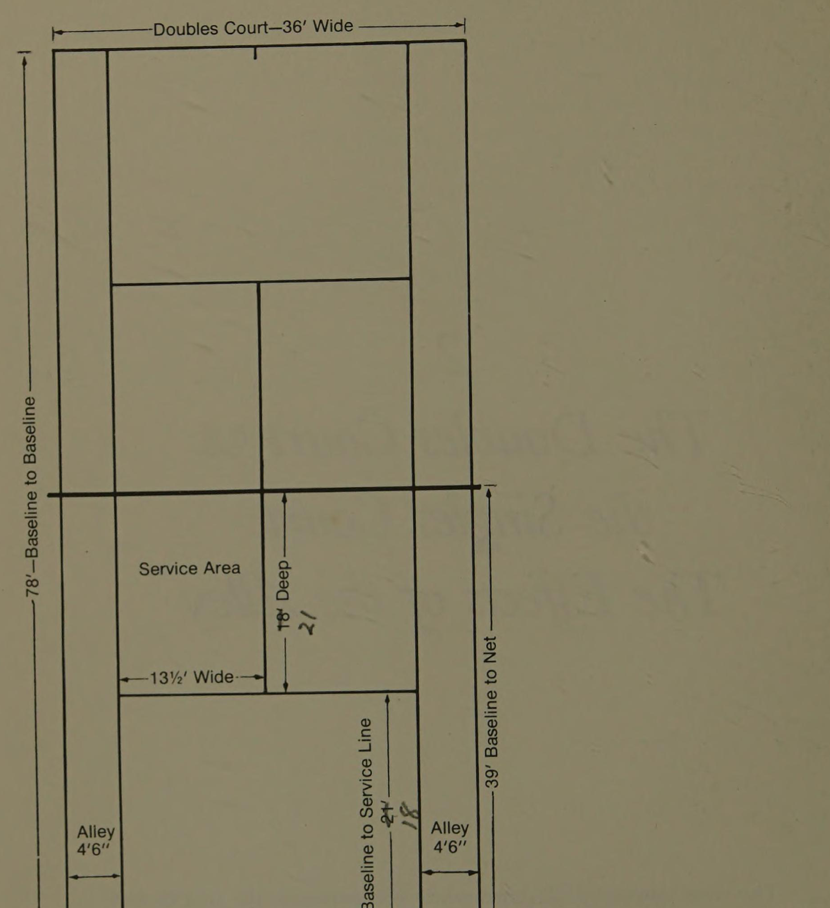
        </div>
        <figcaption class="figure-caption">
            <strong>Sơ đồ 1. Kích Thước Sân Đơn và Sân Đôi</strong> — So sánh kích thước sân đơn (rộng 27 feet) và sân đôi (rộng 36 feet). Hành lang đánh đôi mỗi bên rộng 4.5 feet mở rộng đáng kể góc đánh và phạm vi bao quát sân.
        </figcaption>
    </figure>
    

        <p>Tuy nhiên, những con số thuần túy về mặt kích thước đó chỉ là phần nổi của tảng băng chìm. Chúng ta hãy cùng đi sâu phân tích xem độ rộng cộng thêm của hai dải hành lang đã làm biến đổi sân đánh đôi một cách sâu sắc như thế nào trên mọi bình diện hình học, và những tác động này định hình chiến thuật thi đấu của bạn ra sao.</p>

        <h2 class="sub-heading">Tác Động Theo Chiều Ngang: Mở Rộng Góc Đánh và Vùng Không Gian Xung Quanh Sân</h2>

        <p>Sự khác biệt mang tính cốt lõi nhất giữa sân đánh đơn và sân đánh đôi không chỉ nằm ở bản thân những mét vuông bên trong các vạch kẻ vôi, mà nằm ở <em>vùng không gian thi đấu bao quanh sân</em>. Hai dải hành lang cho phép bạn tạo ra những góc đánh hiểm hóc và sắc bén hơn rất nhiều. Khả năng mở rộng góc này sẽ kéo giãn diện tích bao quát bắt buộc của đối thủ bên ngoài đường biên theo một tỷ lệ lớn hơn nhiều so với tỷ lệ 1:1 của bản thân hành lang.</p>

        <p><strong>1. Khi bóng nảy ở góc xa nhất của đường cuối sân (Baseline):</strong> Hãy so sánh góc nảy của quả bóng chạm góc ngoài cùng của đường cuối sân đôi (Điểm nảy A) với góc nảy của quả bóng chạm góc ngoài của sân đơn (Điểm nảy B). Khi đối thủ đứng cách đường cuối sân một khoảng bằng chiều rộng của hành lang (4,5 feet), diện tích bao quát mà họ phải bảo vệ trước góc đánh của Điểm nảy A sẽ rộng hơn một khoảng bằng đúng độ rộng của hành lang so với khi đối đầu với Điểm nảy B. Ở cự ly này, hành lang làm gia tăng vùng bảo vệ của đối thủ theo tỷ lệ 1:1.</p>

        <p><strong>2. Khi bóng nảy ở góc xa nhất của đường giao bóng (Service Line):</strong> Giờ đây, hãy so sánh góc nảy của bóng khi tiếp đất tại góc ngoài của đường giao bóng sân đôi (Điểm nảy D) với góc nảy tại góc ngoài đường giao bóng sân đơn (Điểm nảy C). Khi đối thủ đứng ở phía sau cuối sân, góc mở rộng của Điểm nảy D sẽ đẩy họ ra xa hơn một khoảng lớn hơn rất nhiều so với một bề rộng hành lang thông thường. Do đó, một cú đánh sắc ra mang cá tại đường giao bóng sẽ mở rộng vùng sân phòng thủ của đối thủ theo một tỷ lệ vượt trội hơn hẳn 1:1. Đối thủ bị lôi ra tít ngoài hàng rào chắn, mở toang toàn bộ phần sân còn lại cho bạn dứt điểm.</p>

        
    <figure class="book-figure">
        <div class="figure-img-wrapper">
            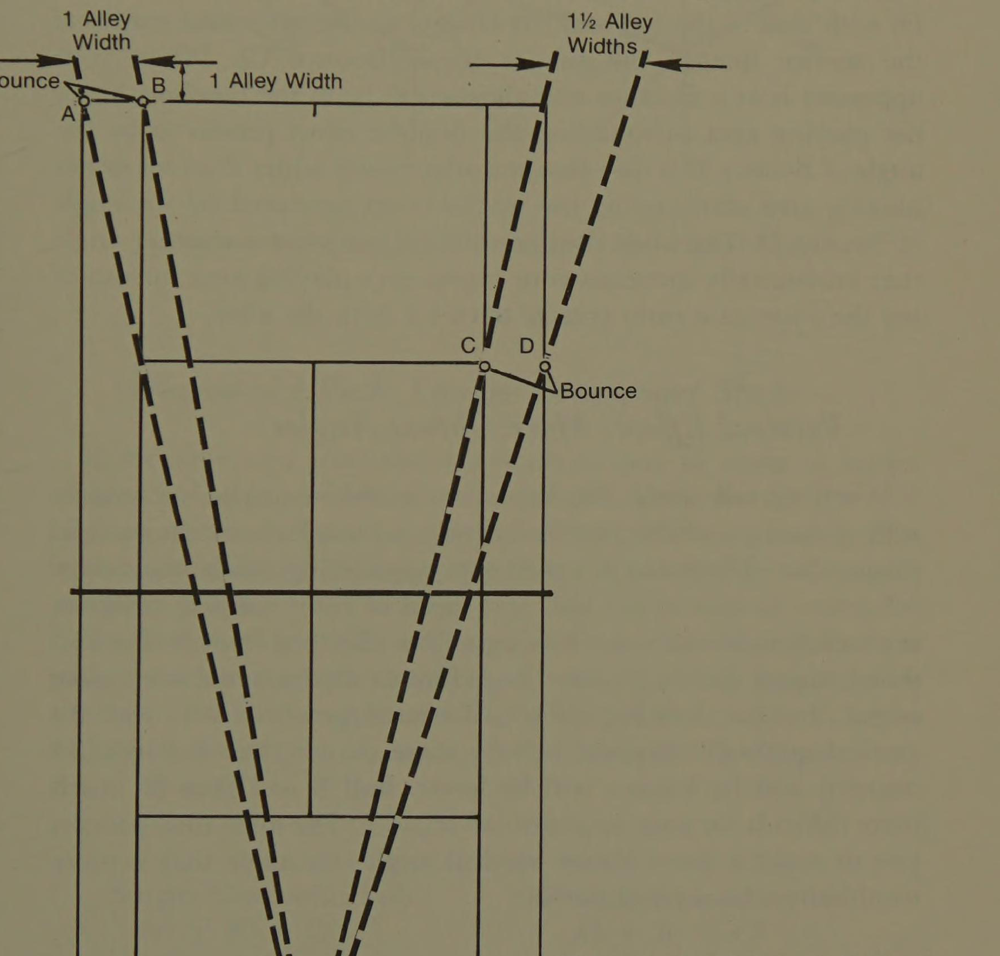
        </div>
        <figcaption class="figure-caption">
            <strong>Sơ đồ 2. Tác Động Theo Chiều Ngang Của Hành Lang Đánh Đôi</strong> — Các góc đánh rộng hơn và diện tích bao quát quanh sân mở rộng theo tỷ lệ lớn hơn 1:1 so với độ rộng của hành lang khi bóng nảy ở góc xa của đường cuối sân hoặc đường giao bóng.
        </figcaption>
    </figure>
    

        <h2 class="sub-heading">Tác Động Theo Chiều Dọc: Góc Nảy Tù Hơn và Quỹ Đạo Thấp Hơn</h2>

        <p>Khi bàn về khoảng cách do các góc tạo ra, các tay vợt thường chỉ tập trung vào mặt phẳng nằm ngang mà bỏ quên tác động cực kỳ quan trọng trên mặt phẳng thẳng đứng. Nếu bỏ qua các yếu tố phụ như độ xoáy của bóng hay độ nhám của mặt sân, hãy so sánh một quả bóng nảy trên đường biên đơn (Điểm nảy A) với quả bóng nảy trên đường biên đôi (Điểm nảy B) xuất phát từ cùng một vị trí đánh.</p>

        
    <figure class="book-figure">
        <div class="figure-img-wrapper">
            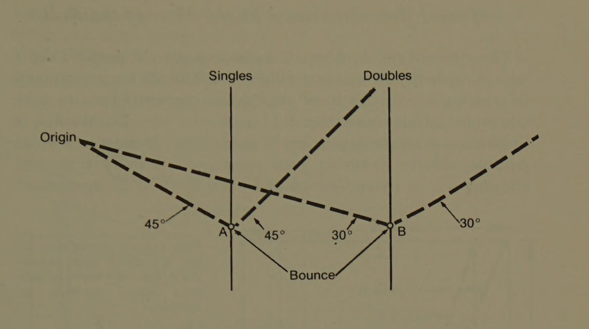
        </div>
        <figcaption class="figure-caption">
            <strong>Sơ đồ 3. Tác Động Theo Chiều Dọc Của Hành Lang: Góc Nảy Tù Hơn</strong> — Hành lang cho phép quỹ đạo bay phẳng hơn và góc nảy tù hơn (30° so với 45° ở sân đơn), khiến bóng nảy thấp và khó cứu hơn đối với đối thủ.
        </figcaption>
    </figure>
    

        <p>Bởi vì dải hành lang cho phép đường bóng bay có độ dốc phẳng hơn và đi được quãng đường dài hơn trước khi tiếp đất, góc nảy thẳng đứng của Điểm nảy B (khoảng 30 độ) sẽ tù hơn đáng kể so with góc nảy của Điểm nảy A (khoảng 45 độ). Hậu quả trực tiếp là quả bóng ở sân đôi sẽ nảy thấp hơn, trượt nhanh hơn trên mặt sân và chui rúc dưới tầm với thoải mái của đối phương. Quả bóng B này trở nên cực kỳ khó cứu và vô hiệu hóa hoàn toàn ý đồ đánh phản công của đối thủ.</p>

        <h2 class="sub-heading">Tác Động Theo Đường Chéo: Cú Đánh Chéo Sân Dài Hơn</h2>

        <p>Một nguyên lý hình học căn bản khác mà bạn phải luôn khắc ghi: hai dải hành lang mở rộng cho phép bạn tung ra những cú đánh chéo sân (crosscourt) có quãng đường bay dài hơn rất nhiều so với sân đánh đơn. Bạn có thể đánh bóng bổng hơn, vung vợt mạnh hơn và nhắm bóng sâu hơn về góc sân đối diện mà quả bóng vẫn nằm gọn gàng bên trong sân.</p>

        <p>Điều này có ý nghĩa chiến thuật sống còn khi cả hai đối thủ đều đã áp sát lưới và bạn chuẩn bị tung ra một cú lốp bóng (lob). Hãy áp dụng định lý Pythagore (\(A^2 + B^2 = C^2\)) để tính toán độ dài cạnh huyền của đường chéo sân:</p>

        <div class="math-formula-box">
            <p><strong>Cú lốp chéo sân đơn:</strong> \(12^2 + 16^2 = 144 + 256 = 400 
ightarrow C_1 = 20\)</p>
            <p><strong>Cú lốp chéo sân đôi:</strong> \(16^2 + 16^2 = 256 + 256 = 512 
ightarrow C_2 = \sqrt512 pprox 22,63\)</p>
        </div>

        
    <figure class="book-figure">
        <div class="figure-img-wrapper">
            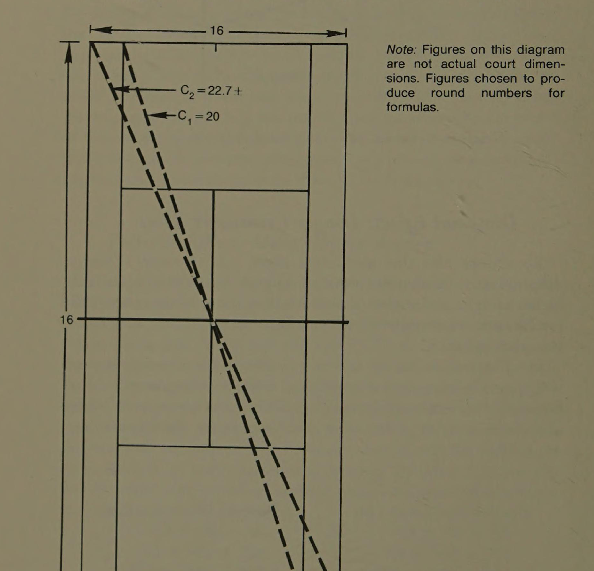
        </div>
        <figcaption class="figure-caption">
            <strong>Sơ đồ 4. Tác Động Theo Đường Chéo: Cú Đánh Chéo Sân Dài Hơn</strong> — Hành lang cho phép thực hiện cú đánh chéo sân có quãng đường bay dài hơn, cho phép đánh bóng bổng và sâu hơn mà vẫn ở trong sân (áp dụng định lý Pythagore).
        </figcaption>
    </figure>
    

        <p>Khoảng gia tăng hơn 2,6 đơn vị chiều dài cạnh chéo này mang lại cho bạn một biên độ an toàn khổng lồ. Cú lốp bóng chéo sân có thể đi cao hơn hẳn qua tầm với của cây vợt đối phương mà không sợ bị bay ra ngoài đường biên cuối sân.</p>

        <h2 class="sub-heading">Tác Động Về Thời Gian: Rút Ngắn Thời Gian Bóng Bay Để Giành Thế Tấn Công</h2>

        <p>Bên cạnh việc gia tăng cự ly, các dải hành lang của sân đôi cũng làm tăng thời gian bay khả dĩ của quả bóng. Thời gian bóng bay càng kéo dài và bạn càng chần chừ chờ đợi bóng rơi lùi sâu ra sau sân mới chịu đánh trả, thì đối thủ bên kia lưới càng có thừa thời gian để tận dụng sự do dự đó và áp sát lưới bịt kín mọi góc đánh.</p>

        <p>Để phá vỡ tình thế nguy hiểm này, bạn phải chủ động <em>cắt ngắn thời gian bóng bay</em> bằng cách di chuyển đón bóng càng sớm càng tốt khi bóng vừa nảy lên (take the ball on the rise). Điều này tước đoạt thời gian hồi phục của đối thủ, đồng thời cho phép bạn mượn lực tiến về phía trước để đưa bóng vào những khoảng trống không người bảo vệ. Hãy nhớ một nguyên tắc cơ bản: trong quần vợt không có luật nào bắt buộc quả bóng phải nảy rồi mới được đánh, ngoại trừ tình huống đón quả giao bóng!</p>

        
    <figure class="book-figure">
        <div class="figure-img-wrapper">
            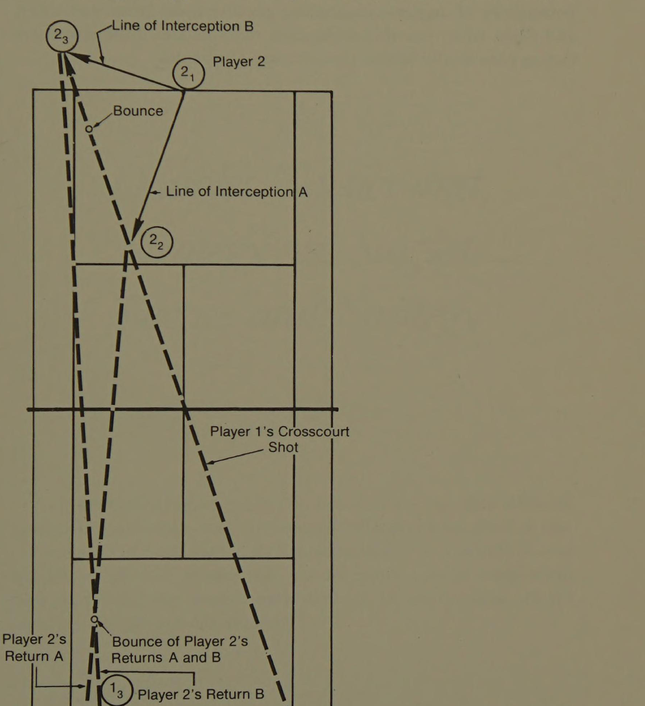
        </div>
        <figcaption class="figure-caption">
            <strong>Sơ đồ 5. Rút Ngắn Thời Gian Bay Của Bóng Để Giành Thế Tấn Công</strong> — Người chơi 2 chọn đường cắt bóng đón đầu tối ưu (Tuyến A) thay vì lùi lại (Tuyến B), giảm thời gian phản ứng của đối thủ và tạo cú tiếp cận lên lưới ghi điểm.
        </figcaption>
    </figure>
    

        <p>Giả sử bạn là Người chơi 2 và đang phải xử lý một cú đánh chéo sân nguy hiểm từ Người chơi 1 của đối phương. Nếu bạn lựa chọn <strong>Tuyến đón chặn tối ưu (Tuyến A)</strong> bằng cách di chuyển xốc tới đón bóng sớm (\(2_1 
ightarrow 2_2\)), bạn sẽ rút ngắn triệt để thời gian bóng bay, đẩy Người chơi 1 vào thế bị động chống đỡ (\(1_1 
ightarrow 1_2\)), đồng thời tạo ra một cú tiếp cận (approach shot) hoàn hảo để bạn cùng đồng đội tràn lên chiếm lĩnh lưới.</p>

        <p>Ngược lại, nếu bạn ngần ngại và chọn <strong>Tuyến đón chặn dự phòng (Tuyến B)</strong> bằng cách lùi sâu ra ngoài góc sân (\(2_1 
ightarrow 2_3\)), thời gian bóng bay sẽ kéo dài lê thê. Bạn buộc phải thực hiện cú đánh từ vị trí rất xa ngoài sân, mất hoàn toàn khả năng tấn công, và nhiều khả năng cú đánh trả của bạn sẽ bay vào tầm kiểm soát thuận lợi của Người chơi 1 (\(1_1 
ightarrow 1_3\)), tạo cơ hội cho đối thủ tung cú volley kết liễu.</p>

        <p>Một khi bạn đã thấu hiểu tường tận cách mà hành lang sân đôi biến đổi các góc đánh, mở rộng vùng không gian phòng thủ, kéo dài đường chéo sân và chi phối thời gian bóng bay, bạn sẽ nhìn nhận mọi tình huống bóng trên sân dưới một lăng kính chiến thuật hoàn toàn mới mẻ và sắc bén.</p>
    </div>
</div>


<div class="chapter-wrapper page-break" id="chapter-3">
    <div class="chapter-header">
        <p class="chapter-number">CHƯƠNG 3</p>
        <h1 class="chapter-title">Chiến Thuật Đánh Đôi vs<br/>Chiến Thuật Đánh Đơn</h1>
    </div>
    
    <div class="chapter-body">
        <p>Như tôi đã nhiều lần nhấn mạnh, đánh đơn và đánh đôi là hai thế giới hoàn toàn khác biệt. Chúng ta hãy cùng định nghĩa sự khác biệt sâu sắc giữa chúng thông qua lăng kính của từng cú đánh căn bản — vốn là công cụ thi đấu cốt lõi trong cả hai nội dung. Khi bạn thấu hiểu tường tận những tiềm năng lẫn giới hạn của từng cú đánh, bạn sẽ nắm bắt được tại sao và bằng cách nào chiến thuật sử dụng những cú đánh đó lại rẽ sang hai hướng hoàn toàn riêng biệt.</p>

        <h2 class="sub-heading">1. Cú Giao Bóng (The Serve)</h2>

        <p>Khán giả và người chơi phong trào thường bị mê hoặc bởi những cú giao bóng sấm sét bay như tên lửa của các tay vợt huyền thoại như Stan Smith, Arthur Ashe hay Roscoe Tanner. Vì vậy, hoàn toàn dễ hiểu khi rất nhiều người lầm tưởng rằng <em>tốc độ và uy lực sấm sét</em> là chìa khóa duy nhất tạo nên một cú giao bóng thành công.</p>

        <p>Tuy nhiên, như tôi sẽ chứng minh cho bạn thấy ngay sau đây, trong cả đánh đơn lẫn đánh đôi, cú giao bóng không nhất thiết phải mạnh như búa bổ mới đạt hiệu quả tối đa. Bản thân tôi đã trụ vững trong top 10 tay vợt nữ hàng đầu thế giới suốt hơn một thập kỷ, giành chức vô địch Roland Garros và vô số danh hiệu Grand Slam đánh đôi, dù cú giao bóng của tôi chưa bao giờ được xếp vào hàng 'đại bác'.</p>

        <p><strong>Cú giao bóng một cực mạnh trong Đánh đơn:</strong> Trong đánh đơn, một cú giao bóng một sấm sét nhằm mục tiêu ghi điểm trực tiếp (ace) hoặc ép đối thủ trả bóng lỗi ngay lập tức. Sau khi giao bóng, bạn có toàn quyền lựa chọn: hoặc lùi lại trấn giữ đường cuối sân để chuẩn bị cho một loạt giằng co bền bỉ, hoặc tràn lên lưới nếu bạn có sở trường giao bóng lên lưới (serve-and-volley). Nếu cú giao bóng một bị hỏng, bạn vẫn còn cú giao bóng hai để làm lại.</p>

        <p><strong>Cú giao bóng một cực mạnh trong Đánh đôi: Con dao hai lưỡi nguy hiểm!</strong> Trong đánh đôi, chiến thuật hoàn toàn trái ngược. Mục tiêu tối thượng của bên giao bóng trong đánh đôi là: <strong>Đưa bóng vào sân ngay từ quả giao bóng một và lập tức lao lên chiếm lĩnh lưới bằng mọi giá!</strong></p>

        <p>Nếu bạn cố tung ra một cú giao bóng phẳng cực mạnh, quả bóng bay đi với vận tốc quá nhanh sẽ chạm đất bên phần sân đối phương chỉ trong chớp mắt. Nhưng trớ trêu thay, chính tốc độ bay quá nhanh đó lại tước đoạt thời gian di chuyển của bạn! Bạn chưa kịp chạy quá ba bước thì đối thủ đã chạm bóng trả về. Hậu quả là bạn bị kẹt cứng ở 'vùng đất chết' (vùng giữa sân, no-man's land), buộc phải thực hiện quả volley đầu tiên ở vị trí ngang đầu gối hoặc dưới chân cực kỳ khó khăn.</p>

        <p>Hơn nữa, nếu bạn cố ham đánh mạnh và để hỏng cú giao bóng một, bạn sẽ đặt cả đội vào thế ngàn cân treo sợi tóc. Đối thủ biết bạn buộc phải giao bóng hai an toàn, họ sẽ lập tức bước xốc vào sân tấn công, đẩy bạn và đồng đội vào thế phòng thủ bị động.</p>

        <h3 class="minor-heading">Sai Lầm Chí Mạng: Đội Hình Bị Chia Đôi (Team-Splitting)</h3>

        <p>Trong đánh đôi, bạn tuyệt đối không bao giờ được phép đứng lại ở đường cuối sân sau khi giao bóng trong khi đồng đội của bạn đã đứng sẵn trên lưới. Lối đứng 'người trên lưới, kẻ dưới đáy' (team-splitting) này tạo ra một khoảng trống chết khổng lồ ở giữa sân và tước đoạt toàn bộ sức mạnh tấn công lẫn phòng thủ của đội bạn.</p>

        
    <figure class="book-figure">
        <div class="figure-img-wrapper">
            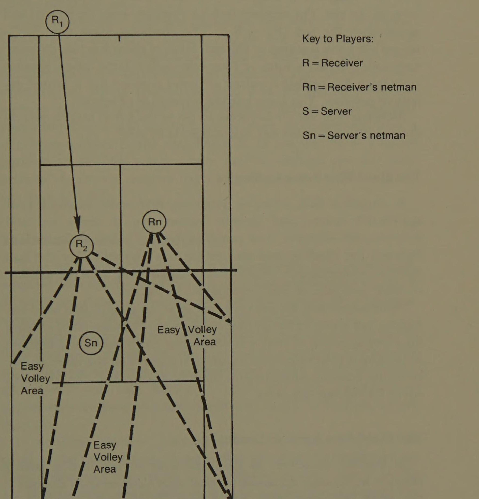
        </div>
        <figcaption class="figure-caption">
            <strong>Sơ đồ 6. Đứng Chia Đôi Đội Hình: Không Thể Tấn Công Hay Phòng Thủ</strong> — Giao bóng xong không theo bóng lên lưới mà đứng lưng chừng ở cuối sân trong khi đồng đội đứng lưới tạo khoảng trống chết ở giữa sân, khiến cả hai rơi vào thế bị động.
        </figcaption>
    </figure>
    

        <p>Hãy nhìn vào <strong>Sơ đồ 6</strong>: Giả sử bạn giao bóng nhưng lại đứng ì ở vạch cuối sân. Người nhận bóng đối phương sẽ không hề cảm thấy bất kỳ áp lực nào. Mối đe dọa bị người đứng lưới của bạn bắt bài (poach) bị giảm sút tối đa vì góc trả bóng chéo sân quá rộng mở. Người nhận bóng sẽ thoải mái gài bóng ngắn vào chân đồng đội bạn, hoặc đè một đường bóng sâu vào khoảng trống giữa hai bạn. Đội nhận bóng sẽ lập tức tràn lên lưới chiếm thế thượng phong, còn đội bạn bị xé toang đội hình.</p>

        <h3 class="minor-heading">Cú Giao Bóng Đánh Đôi Hiệu Quả Nhất</h3>

        <p>Cú giao bóng hoàn hảo nhất trong đánh đôi là cú giao bóng có độ xoáy (xoáy cắt slice hoặc xoáy cầu twist) với khoảng <strong>3/4 lực</strong> (three-quarter speed) kết hợp với vị trí điểm rơi hiểm hóc. Tốc độ 3/4 vừa đủ để bóng bay có kiểm soát, mang lại cho bạn đủ thời gian quý giá để chạy sâu vào sân, áp sát lưới và sẵn sàng thực hiện quả volley đầu tiên ở tầm ngang ngực hoặc trên lưới.</p>

        <p>Huyền thoại Billie Jean King từng hóm hỉnh nhận xét về tôi: <em>'Cú giao bóng của Françoise Dürr đi chậm và điểm rơi chuẩn xác đến mức khi tôi còn chưa kịp vung vợt trả bóng thì cô ấy đã đứng sừng sững ngay trước mặt tôi trên lưới rồi!'</em></p>

        <h2 class="sub-heading">2. Cú Trả Giao Bóng (The Return of Serve)</h2>

        <p><strong>Trong Đánh đơn:</strong> Bạn có toàn bộ chiều rộng sân để nhắm tới. Bạn có thể thực hiện một cú vung vợt đầy đủ từ phía sau (full backswing), tung cú thuận tay hay trái tay bạt sâu về góc sân cuối, đẩy đối thủ lùi xa để làm chủ loạt bóng giằng co.</p>

        <p><strong>Trong Đánh đôi:</strong> Không gian trả bóng của bạn bị bóp nghẹt nghiêm trọng! Hãy nhớ rằng người đứng lưới của đối phương đang đứng rình rập và có thể bắt bài bất kỳ đường bóng nào lơ lửng trên ít nhất một nửa diện tích sân. Do đó, bạn không thể vung vợt lấy đà dài như trong đánh đơn. Nếu bạn làm vậy, bạn sẽ bị muộn nhịp và bóng sẽ bay thẳng vào tầm vợt đang chờ sẵn của người đứng lưới đối phương.</p>

        <p>Hai yếu tố quyết định của cú trả giao bóng trong đánh đôi là <strong>sự nhanh nhạy</strong> và <strong>điểm rơi</strong>:</p>
        <ul>
            <li><strong>Rút ngắn động tác:</strong> Bạn phải rút ngắn động tác mở vợt (compact backswing), chủ động đón bóng khi bóng đang lên (on the rise) bằng các cú đè bóng (chip return) hoặc giật bóng nhanh (jab return).</li>
            <li><strong>Mục tiêu trả bóng:</strong> Đường trả bóng tiêu chuẩn và an toàn nhất là trả chéo sân nhắm thẳng vào chân của người giao bóng đang tiến lên, buộc họ phải volley từ dưới tầm lưới hất lên.</li>
        </ul>

        <h2 class="sub-heading">3. Cú Lốp Bóng (The Lob)</h2>

        <p><strong>Trong Đánh đơn:</strong> Cú lốp bóng thường được dùng như một giải pháp phòng ngự khi bạn bị đối thủ ép chạy tạt ra hai góc sân, giúp bạn có thời gian Bước hồi vị (recovery step), hoặc là một cú lốp topspin tấn công bất ngờ khi đối thủ lên lưới quá sát.</p>

        <p><strong>Trong Đánh đôi:</strong> Cú lốp bóng là một vũ khí chiến thuật tối thượng để giải tỏa áp lực và đảo ngược cục diện. Khi cả hai đối thủ cùng áp sát lưới tạo thành một bức tường kiên cố, một cú lốp bóng điểm rơi chuẩn xác qua đầu người đứng lưới đối phương sẽ lập tức vô hiệu hóa thế trận tấn công của họ, buộc một trong hai người phải quay lưng chạy thục mạng về cuối sân cứu bóng, tạo cơ hội cho đội bạn tràn lên làm chủ lưới.</p>

        <h2 class="sub-heading">4. Cuộc Chiến Trên Lưới và Quả Volley</h2>

        <p><strong>Trong Đánh đơn:</strong> Quả volley thường xuất hiện ở giai đoạn kết thúc điểm số sau khi một tay vợt đã chuẩn bị kỹ lưỡng bằng một cú đánh tiếp cận (approach shot) hiểm hóc đẩy đối phương vào thế bị động.</p>

        <p><strong>Trong Đánh đôi:</strong> Lưới là chiến trường sinh tử! Đội nào chiếm lĩnh được lưới trước sẽ nắm giữ hơn 80% cơ hội thắng điểm. Cả hai thành viên phải cùng nhau tạo thành một hàng rào chắn vững chắc. Quả volley trong đánh đôi đòi hỏi phản xạ cực nhanh, động tác đấm bóng dứt khoát (punch volley), và nguyên tắc vàng là <em>luôn đánh bóng chúc xuống chân đối thủ hoặc bạt bóng vào khoảng trống giữa hai người</em>.</p>

        <h2 class="sub-heading">5. Quả Đập Bóng Trên Đầu (The Overhead / Smash)</h2>

        <p>Quả smash là đòn trừng phạt thích đáng đối với những cú lốp bóng non của đối phương. Trong đánh đơn, bạn có thể dễ dàng smash vào bất kỳ góc sân trống nào. Nhưng trong đánh đôi, đối thủ thường bao quát sân rất tốt, vì vậy cú smash đòi hỏi sự kết hợp hài hòa giữa lực và độ chuẩn xác: nhắm thẳng vào chân của người đứng lưới gần nhất, hoặc đập xé toang trung lộ giữa hai đối thủ.</p>

        <h2 class="sub-heading">6. Quả Half-Volley và Cú Bỏ Nhỏ (Drop Shot)</h2>

        <p>Quả half-volley (đón bóng ngay khi vừa chạm đất nảy lên) trong đánh đôi là cú đánh trung chuyển cực kỳ quan trọng khi bạn đang trên đường tiến lên lưới. Thay vì vung vợt đánh mạnh, bạn chỉ cần giữ chắc cổ tay, hãm lực và đẩy bóng bay thấp qua mép lưới sang chân đối phương.</p>

        <p>Ngược lại, <strong>cú bỏ nhỏ (drop shot)</strong> — vốn rất lợi hại trong đánh đơn để kéo đối thủ mệt mỏi — lại là một nước đi cực kỳ mạo hiểm và hiếm khi được khuyến khích trong đánh đôi. Với sự hiện diện thường trực của hai đối thủ trên sân, một cú bỏ nhỏ không hoàn hảo sẽ bị người đứng lưới đối phương ập vào đập chết ngay lập tức.</p>
    </div>
</div>


<div class="chapter-wrapper page-break" id="chapter-4">
    <div class="chapter-header">
        <p class="chapter-number">CHƯƠNG 4</p>
        <h1 class="chapter-title">Cú Giao Bóng Trong Đánh Đôi</h1>
    </div>
    
    <div class="chapter-body">
        <p>Cú giao bóng của bạn sẽ đạt hiệu quả hủy diệt cao nhất nếu bạn biết cách liên tục biến hóa tốc độ và độ xoáy trong từng quả giao, khiến người nhận bóng luôn rơi vào trạng thái mất thăng bằng và phán đoán sai nhịp. Để tạo ra sự đa dạng về quỹ đạo và điểm rơi đó, bí quyết cốt lõi là <strong>thay đổi cách cầm vợt (grip) và điểm tung bóng (ball toss)</strong>, chứ không phải cố gồng mình vung tay thật nhanh hay thật chậm một cách lộ liễu.</p>

        <h2 class="sub-heading">Ba Cú Giao Bóng Tiêu Chuẩn (The Standard Serves)</h2>

        <h3 class="minor-heading">1. Cú Giao Bóng Phẳng (The Flat Serve)</h3>
        <p>Đối với cú giao bóng phẳng, bạn sử dụng kiểu cầm vợt thuận tay (thường là Eastern forehand hoặc kiểu bắt tay) và tung bóng nhô về phía trước mặt. Ưu điểm nổi bật của cú giao này là tốc độ cực cao, có khả năng áp đảo người nhận bằng uy lực sấm sét.</p>
        <p>Thế nhưng, chính tốc độ khủng khiếp này lại thường xuyên phản tác dụng trong đánh đôi. Thứ nhất, bóng bay theo đường thẳng tắp nên khoảng hở an toàn qua mép lưới là cực kỳ mong manh. Ngay cả một tay vợt cao tới 2,1 mét với tầm với vợt cộng thêm gần 1 mét nữa thì cú giao bóng phẳng cũng chỉ lướt sát sạt mép trên của lưới (xem <strong>Sơ đồ 7</strong>). Tỷ lệ giao bóng thành công của cú đánh này là rất thấp.</p>

        
    <figure class="book-figure">
        <div class="figure-img-wrapper">
            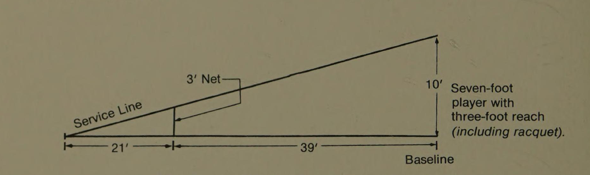
        </div>
        <figcaption class="figure-caption">
            <strong>Sơ đồ 7. Cú Giao Bóng Phẳng Chỉ Vừa Vặn Qua Lưới</strong> — Quỹ đạo bay thẳng tắp của cú giao bóng phẳng (Flat serve) đòi hỏi độ chính xác tuyệt đối; ngay cả tay vợt cao 2,1m với tầm với vợt mở rộng cũng chỉ đưa bóng qua lưới sát mép băng.
        </figcaption>
    </figure>
    

        <p>Thứ hai, vì bóng bay quá nhanh, bạn sẽ không có đủ thời gian để lao lên chiếm lĩnh lưới. Hãy so sánh vị trí bắt quả volley đầu tiên của bạn sau cú giao bóng phẳng (Vị trí 1) với vị trí sau cú giao bóng xoáy twist 3/4 lực (Vị trí 2) trong <strong>Sơ đồ 8</strong>. Sau cú giao phẳng, bạn mới chỉ chạy tới gần vạch giao bóng thì bóng đã bị trả về chân bạn, buộc bạn phải volley phòng ngự trong tư thế với.</p>

        
    <figure class="book-figure">
        <div class="figure-img-wrapper">
            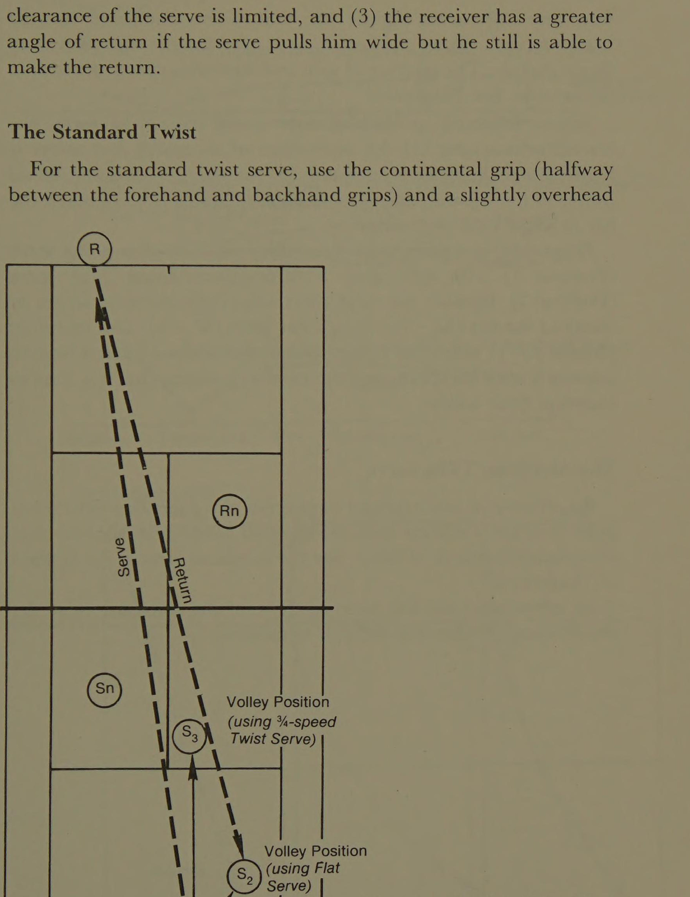
        </div>
        <figcaption class="figure-caption">
            <strong>Sơ đồ 8. Vị Trí Bắt Volley Đầu Sau Giao Bóng Phẳng và Giao Bóng Twist</strong> — So sánh vị trí bắt volley đầu tiên: cú giao bóng phẳng quá nhanh khiến người giao bóng chỉ kịp tiến đến Vị trí 1, trong khi cú giao twist 3/4 lực cho phép tiến sát lưới hơn tại Vị trí 2.
        </figcaption>
    </figure>
    

        <h3 class="minor-heading">2. Cú Giao Bóng Xoáy Cắt (The Slice Serve)</h3>
        <p>Để thực hiện cú giao bóng slice, bạn sử dụng kiểu cầm vợt Continental (nằm giữa thuận tay và trái tay), tung bóng hơi chếch sang bên phải và vung mặt vợt miết vòng quanh cạnh ngoài của quả bóng. Lực miết ngang (sidespin) làm quả bóng uốn cong trên không từ phải qua trái (đối với người thuận tay phải) và sau khi chạm đất sẽ trượt thấp sang bên phải, kéo người nhận trôi dạt ra xa khỏi mép sân.</p>

        <h3 class="minor-heading">3. Cú Giao Bóng Xoáy Cầu (The American Twist Serve)</h3>
        <p>Đây chính là vũ khí chiến lược tối thượng trong đánh đôi! Bạn cầm vợt Continental hoặc dịch nhẹ về phía Backhand, tung bóng hơi lùi về sau đầu và chếch sang bên trái. Khi vung vợt, bạn quẹt từ dưới lên trên và chéo sang phải, tạo ra sự kết hợp hoàn hảo giữa xoáy lên (topspin) và xoáy ngang (sidespin).</p>
        <p>Quả bóng sẽ bay vồng cao qua lưới với độ an toàn tuyệt đối (cách mép lưới 2 đến 3 feet), sau đó chúi mạnh xuống góc sân và khi nảy lên sẽ giật nảy ngược lên cao vào vai hoặc phía trái tay của đối thủ (xem <strong>Sơ đồ 9</strong>). Quỹ đạo bay vòng cung này kéo dài thời gian bóng trên không, cho phép bạn thong dong tiến sâu vào sân, áp sát lưới để đón quả trả bóng lơ lửng của đối phương bằng một quả volley đè từ trên cao xuống.</p>

        
    <figure class="book-figure">
        <div class="figure-img-wrapper">
            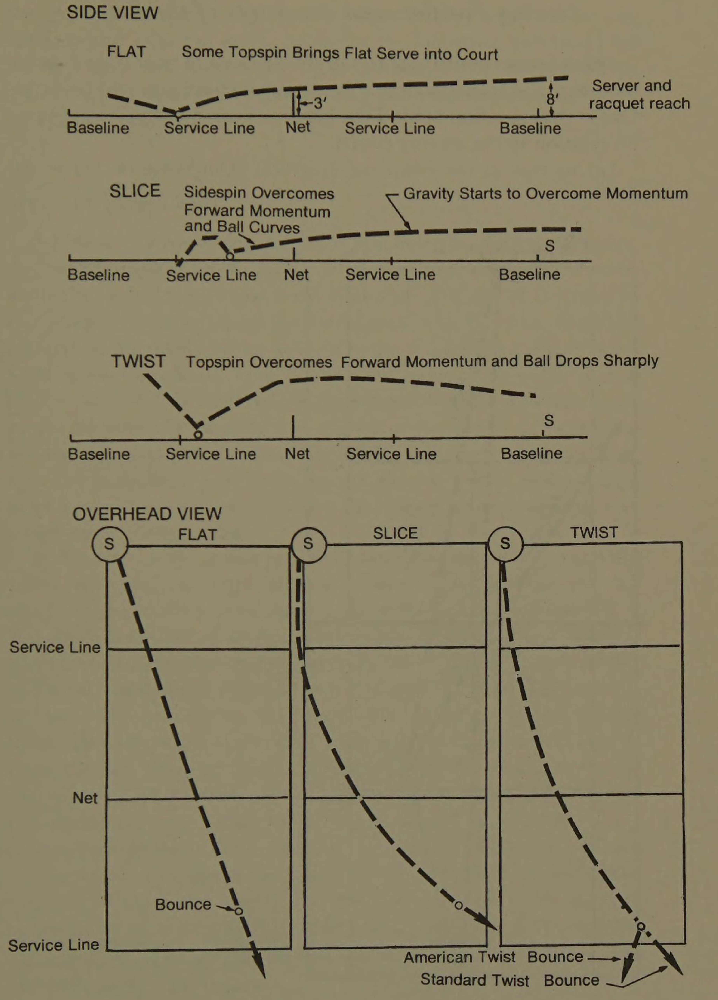
        </div>
        <figcaption class="figure-caption">
            <strong>Sơ đồ 9. Quỹ Đạo Ba Cú Giao Bóng Tiêu Chuẩn: Flat, Slice và Twist</strong> — So sánh đường cong quỹ đạo trên không và độ nảy của ba cú giao bóng: Giao bóng Phẳng (nhanh, nảy thẳng), Giao bóng Cắt Slice (xoáy ngang, trượt thấp), và Giao bóng Xoáy Cầu Twist (vồng cao, nảy ngược hướng).
        </figcaption>
    </figure>
    

        <h2 class="sub-heading">Vị Trí Đứng Giao Bóng và Các Góc Giao Bóng</h2>

        <p>Bên cạnh tốc độ và độ xoáy, hiệu quả của cú giao bóng còn phụ thuộc chặt chẽ vào vị trí bạn đứng sau vạch cuối sân và góc độ bạn hướng quả bóng vào ô giao bóng của đối thủ. Sau đây là phân tích chi tiết 8 phương án giao bóng cơ bản (áp dụng cho người chơi thuận tay phải, bóng đánh ở tốc độ 3/4 lực):</p>

        <h3 class="minor-heading">A. Giao bóng từ Ô Phải (Right Court / Deuce Court)</h3>

        <p><strong>1. Đứng gần tâm sân — Giao vào chữ T trung tâm (Sơ đồ 10):</strong> Quả giao bóng xé thẳng vào trung lộ hướng về phía trái tay của người nhận. Đây là cú giao có tỷ lệ an toàn cao, bóp nghẹt góc trả bóng chéo sân của đối thủ và tạo điều kiện thuận lợi nhất cho bạn lao thẳng lên lưới bịt kín trung lộ.</p>

        
    <figure class="book-figure">
        <div class="figure-img-wrapper">
            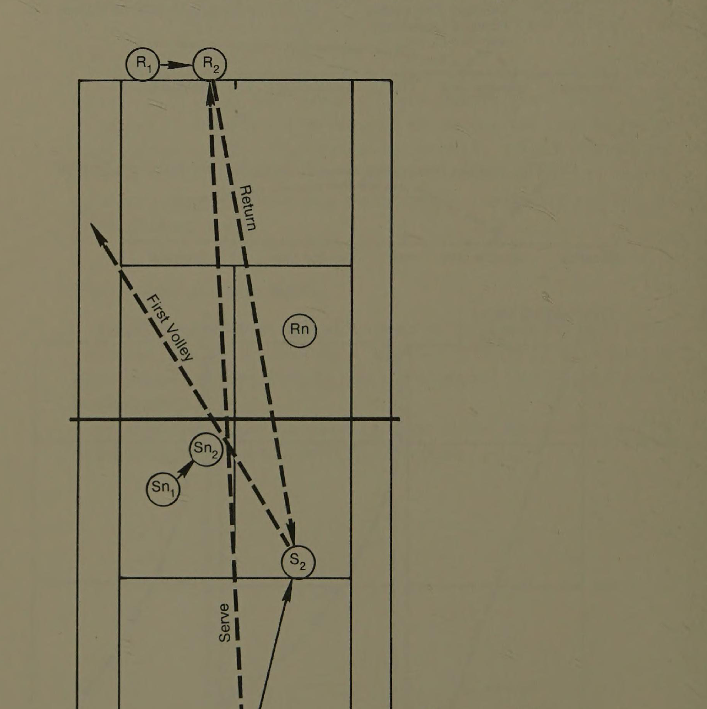
        </div>
        <figcaption class="figure-caption">
            <strong>Sơ đồ 10. Vị Trí Giao Bóng: Ô Phải, Đứng Gần Tâm Sân - Hướng Giao: Vào Trung Tâm</strong> — Giao bóng từ gần điểm chữ T bên ô phải xé thẳng vào trung tâm hướng về phía trái tay của người nhận bóng, hạn chế góc trả bóng chéo sân.
        </figcaption>
    </figure>
    

        <p><strong>2. Đứng gần tâm sân — Giao xé rộng ra mang cá (Sơ đồ 11):</strong> Bóng được hướng ra phía thuận tay ngoài biên của người nhận. Quả giao này kéo đối thủ rời khỏi sân, mở ra khoảng trống mênh mông ở giữa sân cho đồng đội đứng lưới của bạn bắt bài cướp bóng.</p>

        
    <figure class="book-figure">
        <div class="figure-img-wrapper">
            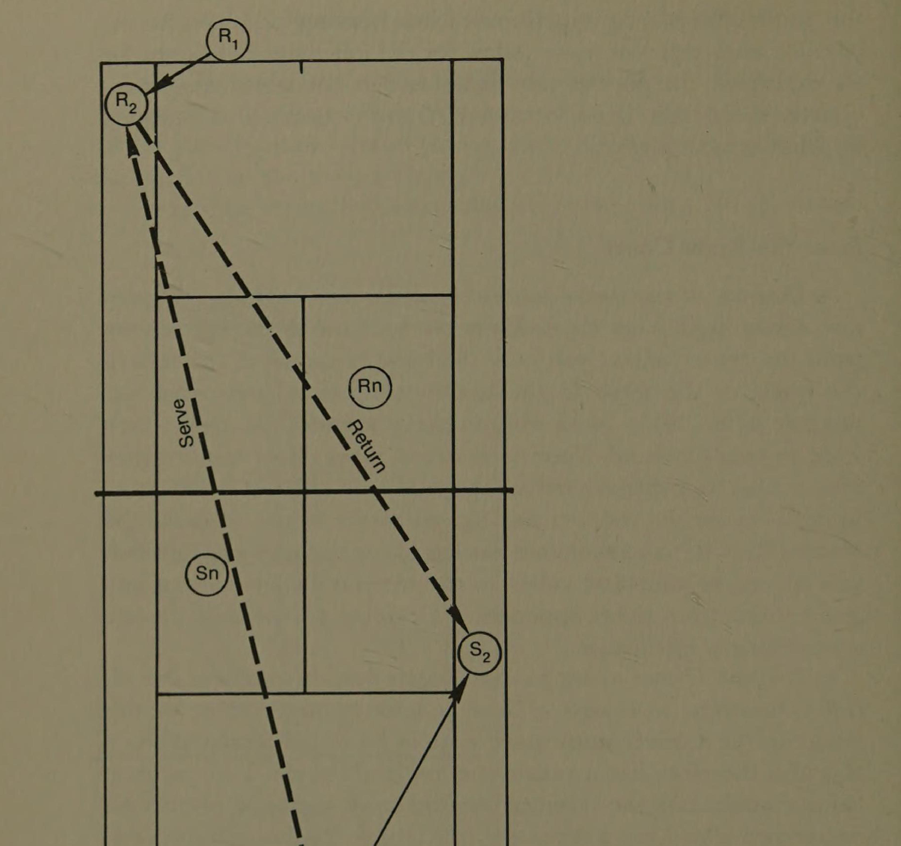
        </div>
        <figcaption class="figure-caption">
            <strong>Sơ đồ 11. Vị Trí Giao Bóng: Ô Phải, Đứng Gần Tâm Sân - Hướng Giao: Ép Góc Rộng</strong> — Giao bóng từ trung tâm ô phải kéo góc ra mang cá phía thuận tay người nhận, mở rộng hành lang để đồng đội đứng lưới bắt bài.
        </figcaption>
    </figure>
    

        <p><strong>3. Đứng sát góc ngoài biên — Giao xé rộng ra mang cá (Sơ đồ 12):</strong> Tận dụng góc đứng rộng tối đa để ép đối thủ văng ra khỏi hàng rào. Tuy nhiên, bạn phải cẩn thận vì hành lang dọc dây bên bạn bị bỏ ngỏ, đòi hỏi người đứng lưới phải cực kỳ tập trung cảnh giác.</p>

        
    <figure class="book-figure">
        <div class="figure-img-wrapper">
            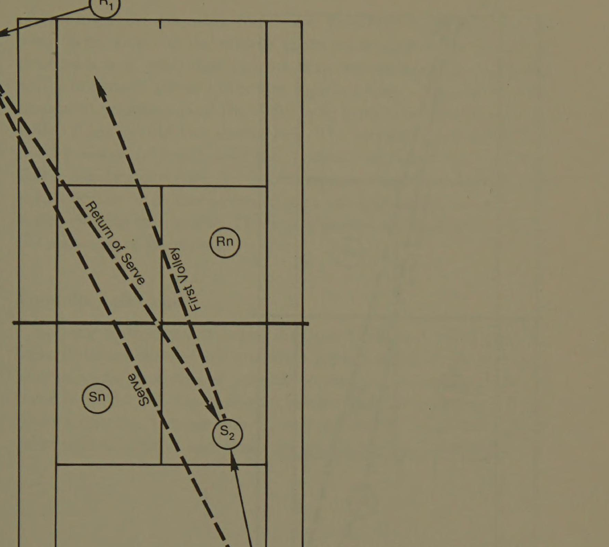
        </div>
        <figcaption class="figure-caption">
            <strong>Sơ đồ 12. Vị Trí Giao Bóng: Ô Phải, Đứng Sát Đường Biên Dọc - Hướng Giao: Ép Góc Rộng</strong> — Đứng sát góc ngoài ô phải giao bóng góc rộng tối đa ra mang cá, buộc người nhận phải di chuyển ra ngoài sân nhưng để hở khoảng trống lớn ở đường biên dọc.
        </figcaption>
    </figure>
    

        <p><strong>4. Đứng sát góc ngoài biên — Giao chéo vào chữ T trung tâm (Sơ đồ 13):</strong> Đây là một góc giao rất khó và rủi ro. Cự ly chéo sân dài giúp người nhận dễ dàng chặn đẩy bóng ngược lại góc sân trống bạn vừa bỏ lại.</p>

        
    <figure class="book-figure">
        <div class="figure-img-wrapper">
            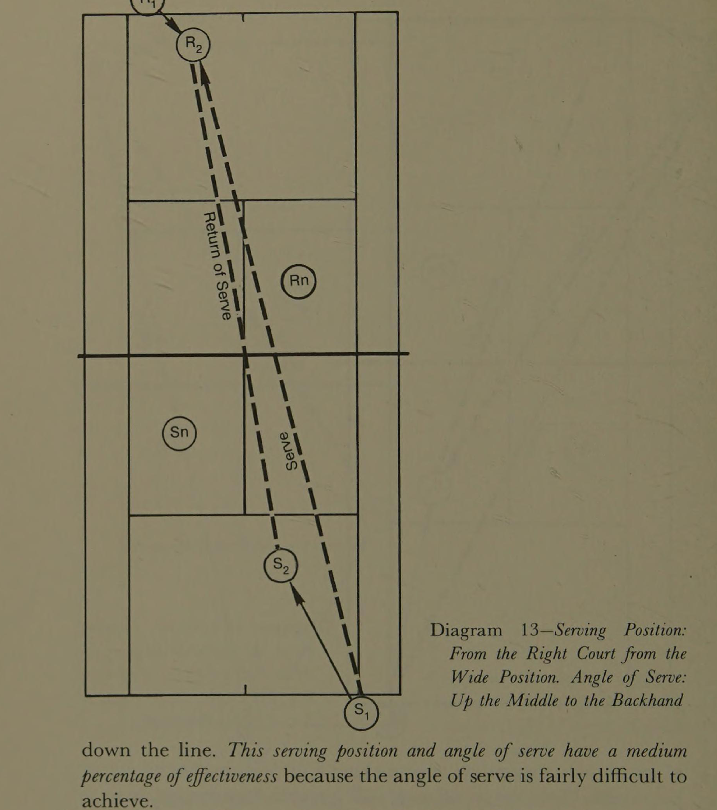
        </div>
        <figcaption class="figure-caption">
            <strong>Sơ đồ 13. Vị Trí Giao Bóng: Ô Phải, Đứng Sát Đường Biên Dọc - Hướng Giao: Vào Trung Tâm</strong> — Đứng góc ngoài ô phải giao bóng chéo vào chữ T; góc đánh này khá khó và tạo cơ hội cho người nhận chủ động đè bóng phản công.
        </figcaption>
    </figure>
    

        <h3 class="minor-heading">B. Giao bóng từ Ô Trái (Left Court / Ad Court)</h3>

        <p><strong>5. Đứng gần tâm sân — Giao vào chữ T trung tâm (Sơ đồ 14):</strong> Hướng bóng vào phía thuận tay trong của người nhận. Cú đánh chắc chắn, hạn chế tối đa nguy cơ bị đối thủ bạt bóng dọc dây.</p>

        
    <figure class="book-figure">
        <div class="figure-img-wrapper">
            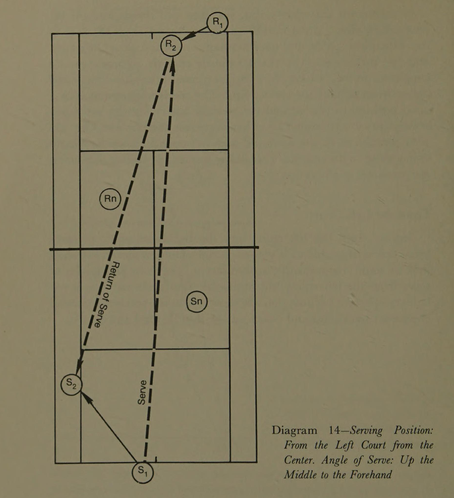
        </div>
        <figcaption class="figure-caption">
            <strong>Sơ đồ 14. Vị Trí Giao Bóng: Ô Trái, Đứng Gần Tâm Sân - Hướng Giao: Vào Trung Tâm</strong> — Giao bóng từ tâm sân bên ô trái (ô lợi điểm) vào chữ T hướng về phía thuận tay của người nhận, an toàn và dễ kiểm soát điểm rơi.
        </figcaption>
    </figure>
    

        <p><strong>6. Đứng gần tâm sân — Giao xé rộng ra mang cá (Sơ đồ 15):</strong> Đòn tấn công chí mạng vào điểm yếu trái tay của đối thủ! Bóng nảy bạt ra ngoài biên buộc đối thủ phải rướn người cứu bóng trái tay trong tư thế mất thăng bằng.</p>

        
    <figure class="book-figure">
        <div class="figure-img-wrapper">
            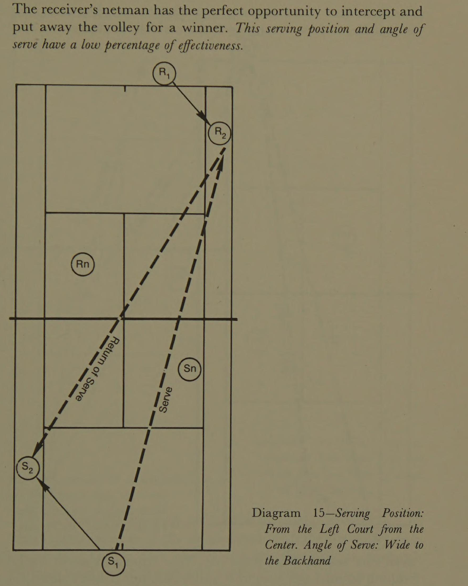
        </div>
        <figcaption class="figure-caption">
            <strong>Sơ đồ 15. Vị Trí Giao Bóng: Ô Trái, Đứng Gần Tâm Sân - Hướng Giao: Ép Góc Rộng</strong> — Giao bóng từ tâm sân bên ô trái xé rộng ra mang cá tấn công vào điểm yếu trái tay của đối thủ, kéo đối thủ ra xa khỏi sân đấu.
        </figcaption>
    </figure>
    

        <p><strong>7. Đứng sát góc ngoài biên — Giao xé rộng ra mang cá (Sơ đồ 16):</strong> Ép đối thủ hoàn toàn ra khỏi sân đấu. Cú đánh này mở đường cho đồng đội của bạn băng cắt ngang lưới dứt điểm dễ dàng.</p>

        
    <figure class="book-figure">
        <div class="figure-img-wrapper">
            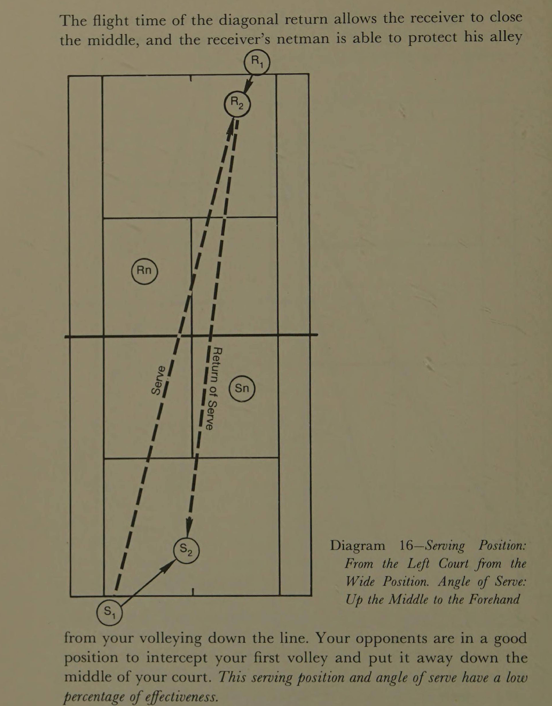
        </div>
        <figcaption class="figure-caption">
            <strong>Sơ đồ 16. Vị Trí Giao Bóng: Ô Trái, Đứng Sát Đường Biên Dọc - Hướng Giao: Ép Góc Rộng</strong> — Đứng sát góc ngoài ô trái giao bóng xoáy cắt rộng tối đa ra biên, đẩy đối thủ trôi hoàn toàn ra ngoài hành lang đánh đôi.
        </figcaption>
    </figure>
    

        <p><strong>8. Đứng sát góc ngoài biên — Giao chéo vào chữ T trung tâm (Sơ đồ 17):</strong> Đường bóng bất ngờ xuyên thủng hàng phòng ngự, làm ngỡ ngàng đối phương nếu họ có xu hướng đứng lệch ra ngoài để đón đỡ quả giao bóng rộng.</p>

        
    <figure class="book-figure">
        <div class="figure-img-wrapper">
            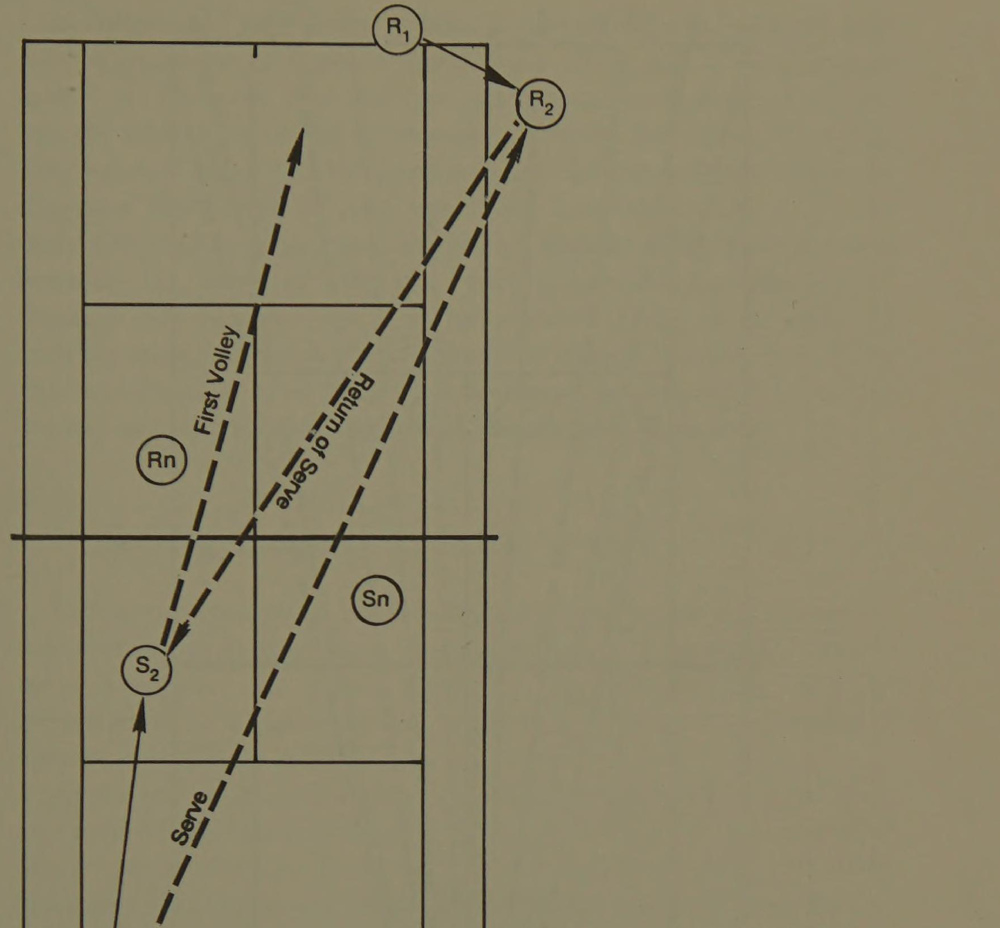
        </div>
        <figcaption class="figure-caption">
            <strong>Sơ đồ 17. Vị Trí Giao Bóng: Ô Trái, Đứng Sát Đường Biên Dọc - Hướng Giao: Vào Trung Tâm</strong> — Đứng sát góc ngoài ô trái giao bóng góc hẹp vào trung tâm, đòi hỏi kỹ thuật cao và mở ra góc tiếp cận lên lưới độc đáo.
        </figcaption>
    </figure>
    

        <h2 class="sub-heading">Các Vùng Mục Tiêu Điểm Rơi Tiêu Chuẩn (Sơ đồ 18)</h2>

        <p>Các mục tiêu giao bóng trên sân không phải là những điểm cố định cứng nhắc. Một đường thẳng tưởng tượng nối giữa vị trí của người giao bóng và người nhận bóng sẽ xác định <strong>Tâm điểm đối kháng (C)</strong>. Mọi mục tiêu điểm rơi (Mục tiêu 1: Chữ T, Mục tiêu 2: Thẳng vào người, Mục tiêu 3: Góc mang cá ngoài) luôn duy trì tương quan hình học đối xứng với tâm điểm này (xem <strong>Sơ đồ 18</strong>).</p>

        
    <figure class="book-figure">
        <div class="figure-img-wrapper">
            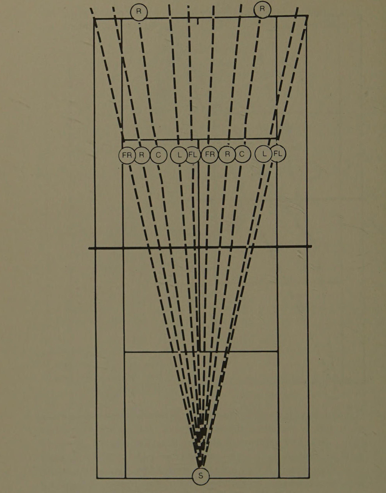
        </div>
        <figcaption class="figure-caption">
            <strong>Sơ đồ 18. Các Mục Tiêu Điểm Rơi Tiêu Chuẩn Khi Giao Bóng</strong> — Phân bổ các vùng mục tiêu giao bóng (Góc chữ T, vào người, góc mang cá ngoài) tương ứng với vị trí đứng của người nhận và hướng di chuyển lên lưới.
        </figcaption>
    </figure>
    

        <h2 class="sub-heading">Kỹ Thuật Tiến Lên Chiếm Lưới Của Người Giao Bóng</h2>

        <p>Sau khi chạm bóng giao, bạn không chạy một mạch cắm đầu lên lưới. Hãy thực hiện chuỗi động tác 3 bước: vung chân sau bước tới để lấy đà, chạy nhịp nhàng 2 đến 3 bước dài vào sân, và ngay khoảnh khắc đối thủ chuẩn bị chạm bóng trả, bạn phải thực hiện <strong>bước dừng tách chân (split-step)</strong> để hạ thấp trọng tâm và cân bằng cơ thể. Từ tư thế thăng bằng này, bạn có thể bùng nổ bật sang trái, sang phải hoặc rướn tới trước để thực hiện quả volley đầu tiên một cách hoàn hảo.</p>

        <h2 class="sub-heading">Vai Trò Của Người Đứng Lưới Bên Giao</h2>

        <p>Hiệu quả thi đấu của người đồng đội đứng lưới phụ thuộc trực tiếp vào chất lượng cú giao bóng của bạn. Một cú giao bóng tốt, có điểm rơi hiểm hóc sẽ cho phép người đứng lưới tự tin 'lấn sân' (overplay), di chuyển rình rập và đe dọa tinh thần người nhận bóng. Ngược lại, một cú giao bóng non, bồng bềnh sẽ biến Đồng đội đứng lưới (net partner) thành tấm bia đỡ đạn cho đối thủ bắn phá. Do đó, hãy giao bóng với tinh thần đồng đội cao nhất: giao bóng có tính toán để tạo cơ hội cho đồng đội kết liễu pha bóng!</p>
    </div>
</div>


<div class="chapter-wrapper page-break" id="chapter-5">
    <div class="chapter-header">
        <p class="chapter-number">CHƯƠNG 5</p>
        <h1 class="chapter-title">Cú Trả Giao Bóng Trong Đánh Đôi</h1>
    </div>
    
    <div class="chapter-body">
        <p>Cũng giống như cú giao bóng, cú trả giao bóng là mắt xích quyết định vận mệnh của từng điểm số trong đánh đôi. Ngay sau khi quả giao bóng bay sang, đội giao bóng thực chất đang rơi vào một khoảnh khắc dễ bị tổn thương nhất: người giao bóng đang phải di chuyển trên đường lên lưới và chưa kịp ổn định vị trí, trong khi người đứng lưới của họ không thể bao quát toàn bộ mặt sân. Nhiệm vụ tối thượng của bên nhận bóng là đưa quả bóng trở lại cuộc chơi một cách thông minh nhất để ngay lập tức trung hòa lợi thế giao bóng của đối phương.</p>

        <h2 class="sub-heading">Kích Thước Thể Chất và Tâm Lý Trong Quần Vợt (Sơ đồ 19)</h2>

        <p>Quần vợt đỉnh cao là một môn thể thao đòi hỏi sự kết hợp phức tạp giữa kỹ năng thể chất thuần túy và bản lĩnh tâm lý vững vàng. Một tay vợt chuyên nghiệp thi đấu ở đẳng cấp thế giới phải xây dựng lối chơi trên một kim tự tháp đa tầng (xem <strong>Sơ đồ 19</strong>):</p>
        <ul>
            <li><strong>Tầng nền tảng thể chất (Physical):</strong> Động tác kỹ thuật chuẩn xác (Stroke) &rarr; Kỹ năng di chuyển linh hoạt (Movement) &rarr; Khả năng phân tích chiến thuật tình huống (Tactics) &rarr; Chiến lược dài hạn cho cả trận đấu (Strategy).</li>
            <li><strong>Tầng nỗ lực và ý chí (Effort):</strong> Đòi hỏi sự bền bỉ về thể lực và tinh thần chiến đấu không khoan nhượng trong từng pha bóng.</li>
            <li><strong>Tầng làm chủ cảm xúc (Emotional Control):</strong> Khả năng giữ vững sự điềm tĩnh, không để sự bực bội hay căng thẳng phá vỡ Nhịp điệu trận đấu (tempo/rhythm).</li>
            <li><strong>Tầng cam kết (Commitment):</strong> Sự tận tâm tuyệt đối với chiến thuật đã đề ra và với người đồng đội bên cạnh.</li>
            <li><strong>Đỉnh cao tập trung (Concentration):</strong> Sự tập trung tối thượng vào từng khoảnh khắc hiện tại của đường bóng, loại bỏ hoàn toàn mọi tạp niệm về việc thắng hay thua.</li>
        </ul>

        
    <figure class="book-figure">
        <div class="figure-img-wrapper">
            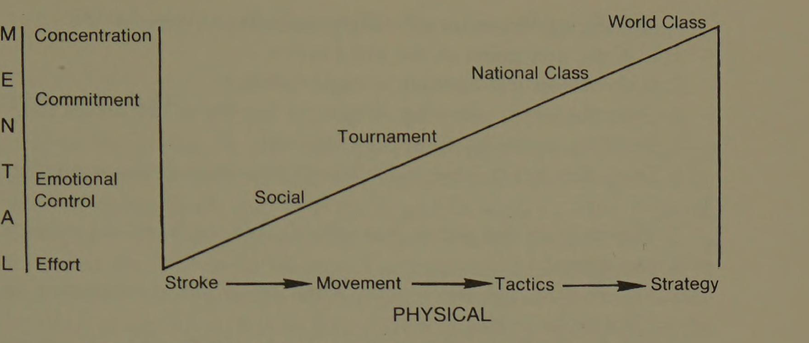
        </div>
        <figcaption class="figure-caption">
            <strong>Sơ đồ 19. Các Khía Cạnh Thể Chất và Tâm Lý Trong Quần Vợt</strong> — Mô hình kim tự tháp tâm lý - thể chất: từ nền tảng động tác, di chuyển, chiến thuật đến đỉnh cao của sự tập trung, cam kết và kiểm soát cảm xúc trong thi đấu.
        </figcaption>
    </figure>
    

        <h2 class="sub-heading">Chuẩn Bị Đón Trả Giao Bóng</h2>

        <h3 class="minor-heading">1. Quan sát đối thủ ngay từ lúc khởi động</h3>
        <p>Bạn có thể chuẩn bị tâm lý và chiến thuật đón trả bóng từ rất lâu trước khi trận đấu chính thức bắt đầu. Trong khoảng thời gian khởi động 5 phút ngắn ngủi, hãy chăm chú quan sát đối thủ giao bóng: Họ có thói quen cầm vợt thế nào? Điểm tung bóng của họ lệch sang phải (báo hiệu cú slice) hay hơi ngả ra sau đầu (báo hiệu cú twist)? Họ có xu hướng lao lên lưới ngay sau quả giao bóng một hay chần chừ ở vạch cuối sân? Những chi tiết tưởng chừng nhỏ nhặt này sẽ giúp bạn dự đoán chính xác đường bóng khi vào trận thực chiến.</p>

        <h3 class="minor-heading">2. Luôn khóa chặt ánh nhìn vào quả bóng</h3>
        <p>Đừng bao giờ rời mắt khỏi quả bóng dù chỉ một phần mười giây: khi bóng còn nằm trong tay người giao, khi bóng được tung lên không trung, khoảnh khắc mặt vợt tiếp xúc bóng, và đặc biệt là khi bóng bay sang phần sân của bạn và chuẩn bị nảy lên.</p>

        <h3 class="minor-heading">3. Bước tới đón bóng — Các góc đón chặn (Sơ đồ 20)</h3>
        <p>Khoảng 75% các quả giao bóng của đối thủ sẽ nằm trong tầm với của bạn chỉ bằng <strong>duy nhất một bước chân</strong>, đặc biệt nếu bạn chủ động di chuyển đón chặn theo góc 45 độ (xem <strong>Sơ đồ 20</strong>). Đừng đứng thụ động chờ bóng rơi xuống ngang tầm hông. Hãy bước chéo một bước xốc tới trước để đón bóng khi bóng đang trên đà nảy lên (on the rise), dùng chính trọng lượng cơ thể đang lao tới để tiếp thêm uy lực cho cú trả bóng mà không cần phải gồng tay quá sức.</p>

        
    <figure class="book-figure">
        <div class="figure-img-wrapper">
            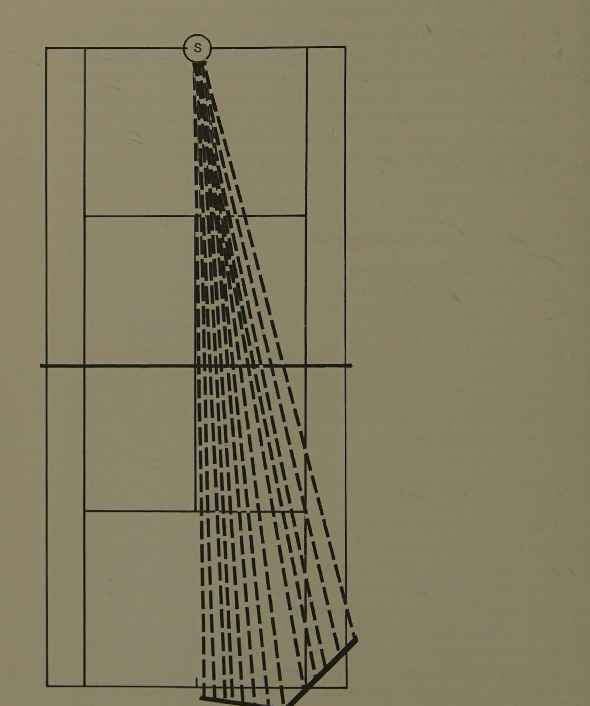
        </div>
        <figcaption class="figure-caption">
            <strong>Sơ đồ 20. Các Góc Đón Chặn Quả Trả Giao Bóng</strong> — Người nhận Bóng tấn công bước tới trước theo đường phân giác của góc giao bóng để đón bóng khi bóng đang lên, dồn trọng lượng cơ thể vào cú trả.
        </figcaption>
    </figure>
    

        <h3 class="minor-heading">4. Vị trí đứng đón trả giao bóng tối ưu (Sơ đồ 21)</h3>
        <p>Vị trí xuất phát chuẩn mực nhất cho người nhận bóng là <strong>điểm giao nhau giữa đường biên đơn và đường cuối sân</strong> (xem <strong>Sơ đồ 21</strong>). Từ vị trí bản lề này, bạn chỉ cần điều chỉnh một bước chân:</p>
        <ul>
            <li>Bước tiến lên hoặc lùi lại tương ứng với <em>tốc độ</em> của quả giao bóng.</li>
            <li>Bước chếch sang trái hoặc sang phải tương ứng với <em>góc độ</em> mà người giao bóng đang đứng đối diện.</li>
        </ul>

        
    <figure class="book-figure">
        <div class="figure-img-wrapper">
            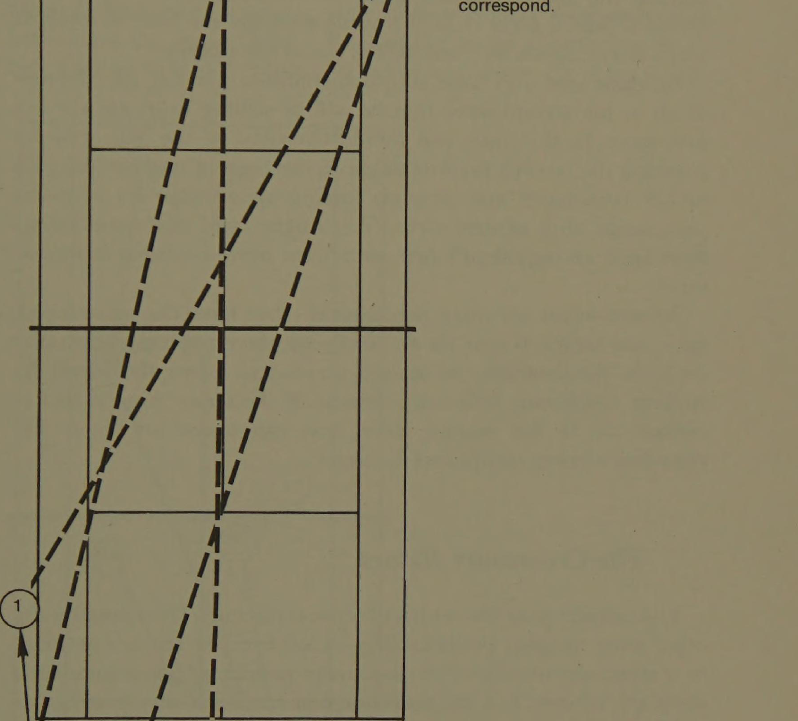
        </div>
        <figcaption class="figure-caption">
            <strong>Sơ đồ 21. Xác Định Vị Trí Đứng Đón Trả Giao Bóng Tối Ưu</strong> — Vị trí chuẩn bị đón giao bóng tại điểm giao nhau giữa đường biên đơn và đường cuối sân; điều chỉnh một bước lên xuống hoặc sang ngang tương ứng với tốc độ và góc của đối thủ.
        </figcaption>
    </figure>
    

        <h2 class="sub-heading">Kỹ Thuật Trả Giao Bóng: Cú Chip Return vs Cú Jab Return</h2>

        <p>Để đối phó với những cú giao bóng hiểm hóc và ngăn chặn người đứng lưới đối phương bắt bài, bạn có hai vũ khí trả bóng chủ lực:</p>

        <p><strong>Cú Đè Bóng Cắt (The Chip Return):</strong> Đây là cú đánh sử dụng độ xoáy cắt ngược (underspin). Bạn giữ mặt vợt gần như vuông góc với mặt đất, mở vợt rất ngắn từ trên cao xuống và tiếp xúc bóng ở góc 90 độ. Ưu điểm tuyệt đối của cú chip return là quả bóng nằm trên mặt dây vợt lâu hơn, mang lại cảm giác kiểm soát điểm rơi hoàn hảo. Bạn dễ dàng lái quả bóng đi sát mép lưới và chúi nhanh xuống chân người giao bóng đang lao lên.</p>

        <p><strong>Cú Giật Bóng Nhanh (The Jab Return):</strong> Cú jab return là một cú đấm bóng gọn ghẽ với động tác vung vợt tối giản. Cả vợt và trọng lượng cơ thể cùng lao về phía trước đồng thời. Cú đánh này tận dụng trọn vẹn tốc độ bóng của đối thủ để bắn bóng trở lại với tốc độ nhanh như chớp, khiến đối phương không kịp trở tay.</p>

        <h2 class="sub-heading">Tâm Lý Trả Quả Giao Bóng Một vs Quả Giao Bóng Hai</h2>

        <p><strong>Trả quả giao bóng một:</strong> Quả giao bóng một là thời điểm đối thủ có vị thế tấn công mạnh nhất. Do đó, mục tiêu của bạn không phải là cố đánh một cú trả bóng ăn điểm trực tiếp (winner) đầy mạo hiểm. Mục tiêu sống còn là <em>sự bền bỉ và tính ổn định</em> (consistency). Hãy đưa bóng vào sân một cách an toàn, ép đối thủ phải thực hiện thêm một cú volley khó. Sự ổn định lặp đi lặp lại của bạn sẽ tạo nên một áp lực tâm lý vô hình đè nặng lên người giao bóng, khiến họ bắt đầu nghi ngờ bản thân và phạm lỗi giao bóng hỏng.</p>

        <p><strong>Trả quả giao bóng hai:</strong> Khi đối thủ buộc phải giao bóng hai, ưu thế hoàn toàn đảo chiều về phía bạn! Hãy chủ động bước chân vào trong sân từ 1 đến 2 bước, thu hẹp góc đánh của đối thủ, tấn công dũng mãnh vào điểm yếu của họ và lập tức tràn lên lưới để cùng đồng đội kết thúc pha bóng.</p>

        <h2 class="sub-heading">Cú Trả Giao Bóng Chéo Sân — Vũ Khí Cốt Lõi (Sơ đồ 22 &amp; 23)</h2>

        <p>Tại sao cú trả bóng chéo sân lại là lựa chọn ưu tiên số một trong hơn 85% các tình huống đánh đôi? Câu trả lời nằm ở ba yếu tố vật lý và hình học không thể chối cãi:</p>
        <ol>
            <li><strong>Lưới ở giữa sân thấp nhất:</strong> Mép lưới tại vị trí trung tâm chỉ cao đúng 3 feet (0,914 m), trong khi ở hai bên cột cọc lưới cao tới 3,5 feet (1,07 m). Đường đánh chéo sân đi qua phần lưới thấp nhất, mang lại biên độ an toàn tuyệt đối.</li>
            <li><strong>Cự ly đường chéo dài nhất:</strong> Đường chéo sân dài hơn đường thẳng dọc dây hơn 2 mét, giúp bạn thoải mái đánh bóng đi sâu mà không lo bị ra ngoài.</li>
            <li><strong>Tránh xa tầm vợt của người đứng lưới đối phương:</strong> Đường bóng chéo sân uốn cong ra xa khỏi người đứng lưới bên giao, khiến họ gần như không thể với tới để can thiệp bắt bài.</li>
        </ol>

        
    <figure class="book-figure">
        <div class="figure-img-wrapper">
            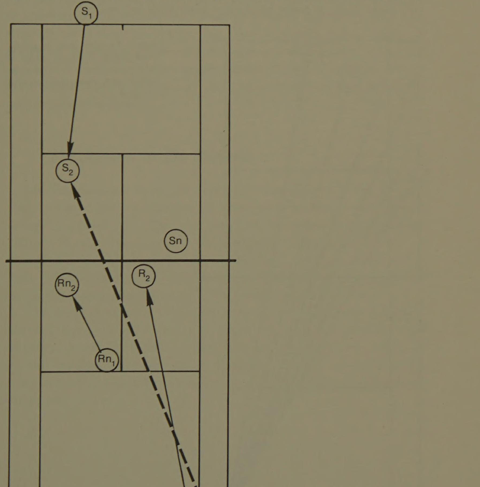
        </div>
        <figcaption class="figure-caption">
            <strong>Sơ đồ 22. Cú Trả Giao Bóng Chéo Sân Mở Rộng</strong> — Sau khi người nhận thực hiện cú trả chéo sân qua đầu người đứng lưới, người đứng lưới của bên nhận lập tức di chuyển khép góc để bịt mọi đường phản công.
        </figcaption>
    </figure>
    

        <p>Khi bạn thực hiện cú trả chéo sân và di chuyển lên tiếp cận lưới (\(R_1 
ightarrow R_2\)), người đồng đội đứng lưới của bạn cũng phải đồng thời di chuyển khép góc (\(Rn_1 
ightarrow Rn_2\)) để bịt kín mọi ngóc ngách phản công của đối thủ (xem <strong>Sơ đồ 22</strong>).</p>

        <p>Trong <strong>Sơ đồ 23</strong>, các mục tiêu trả bóng chéo sân được phân chia rõ rệt: <strong>Mục tiêu 2</strong> (nhắm thẳng vào chân người giao bóng đang tiến lên) và <strong>Mục tiêu 3</strong> (đè bóng sắc ra góc mang cá ngoài) có tỷ lệ ăn điểm cao nhất. Trong khi đó, trả bóng vào <strong>Mục tiêu 1</strong> là một sai lầm chết người vì bóng đi quá gần tầm với của người đứng lưới đối phương.</p>

        
    <figure class="book-figure">
        <div class="figure-img-wrapper">
            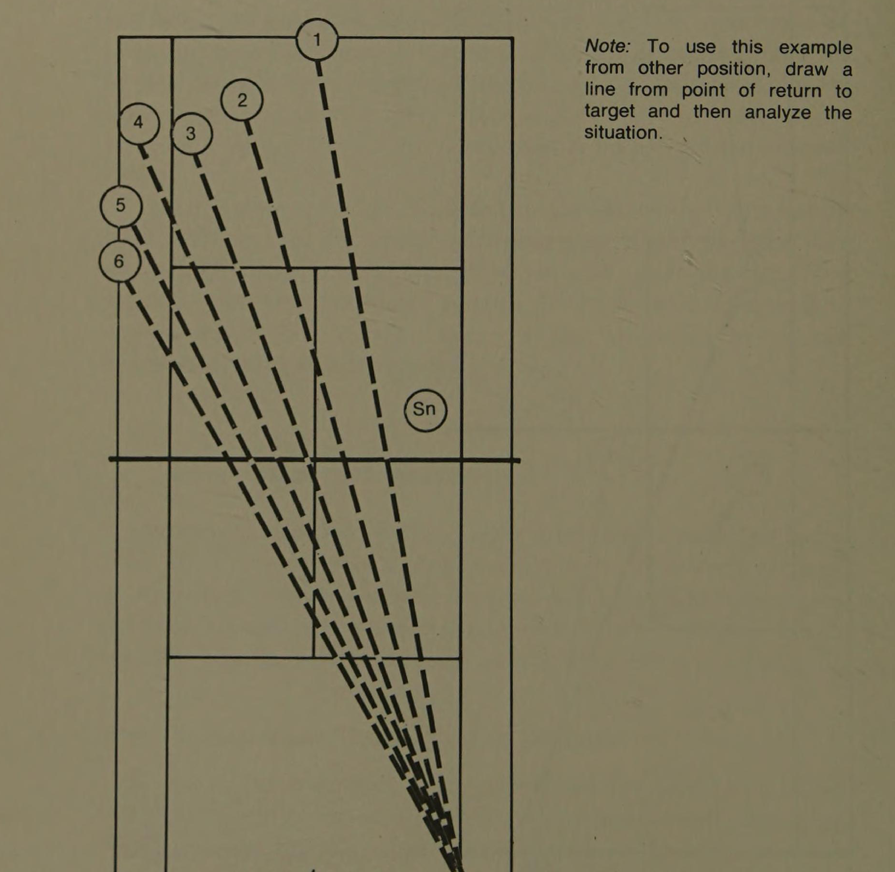
        </div>
        <figcaption class="figure-caption">
            <strong>Sơ đồ 23. Các Mục Tiêu Của Cú Trả Giao Bóng Chéo Sân</strong> — Các điểm rơi mục tiêu cho cú trả chéo sân: trả sâu vào chân người giao bóng đang tiến lên lưới, trả góc ngắn ra mang cá, hoặc đè bóng vào giữa hai người.
        </figcaption>
    </figure>
    

        <h2 class="sub-heading">Các Lựa Chọn Trả Giao Bóng Chiến Thuật Khác</h2>

        <h3 class="minor-heading">1. Bắn bóng thẳng vào Người Đứng Lưới (Sơ đồ 24)</h3>
        <p>Một cú trả bóng xé gió nhắm thẳng vào ngực hoặc chân của người đứng lưới đối phương sẽ tước đoạt toàn bộ thời gian phản xạ của họ. Khi bị bóng bay thẳng vào người ở cự ly gần, phản xạ tự nhiên của hầu hết người chơi là giật mình co rúm hoặc giơ vợt đỡ bóng trong tư thế bị động, dẫn đến quả volley hỏng hoặc bóng bay bồng bềnh sang sân bạn.</p>

        
    <figure class="book-figure">
        <div class="figure-img-wrapper">
            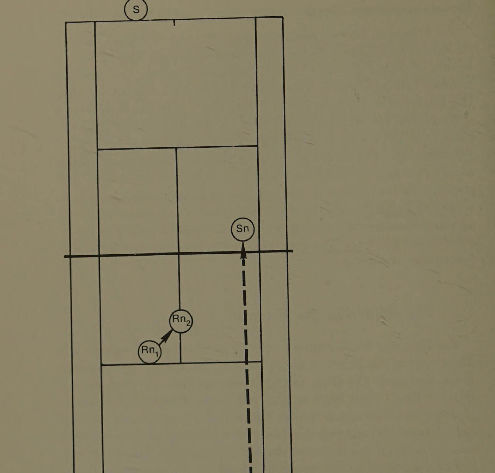
        </div>
        <figcaption class="figure-caption">
            <strong>Sơ đồ 24. Cú Trả Giao Bóng Tấn Công Thẳng Vào Người Đứng Lưới</strong> — Đánh bóng thẳng vào ngực hoặc chân người đứng lưới đối phương để rút ngắn tối đa thời gian phản xạ của họ và ép đối thủ mắc lỗi hỏng bóng.
        </figcaption>
    </figure>
    

        <h3 class="minor-heading">2. Bắn bóng dọc hành lang đánh đôi (Down the Alley — Sơ đồ 25)</h3>
        <p>Nếu người đứng lưới của đối phương tỏ ra quá hung hăng, liên tục di chuyển lấn sang giữa sân để bắt bài cú trả chéo sân của bạn, hãy trừng phạt họ ngay lập tức bằng một cú bạt bóng sấm sét dọc theo đường hành lang đánh đôi (xem <strong>Sơ đồ 25</strong>). Chỉ cần một cú trả bóng dọc dây thành công ghi điểm trực tiếp, bạn sẽ 'đóng đinh' người đứng lưới đối phương đứng chôn chân tại chỗ trong suốt phần còn lại của trận đấu.</p>

        
    <figure class="book-figure">
        <div class="figure-img-wrapper">
            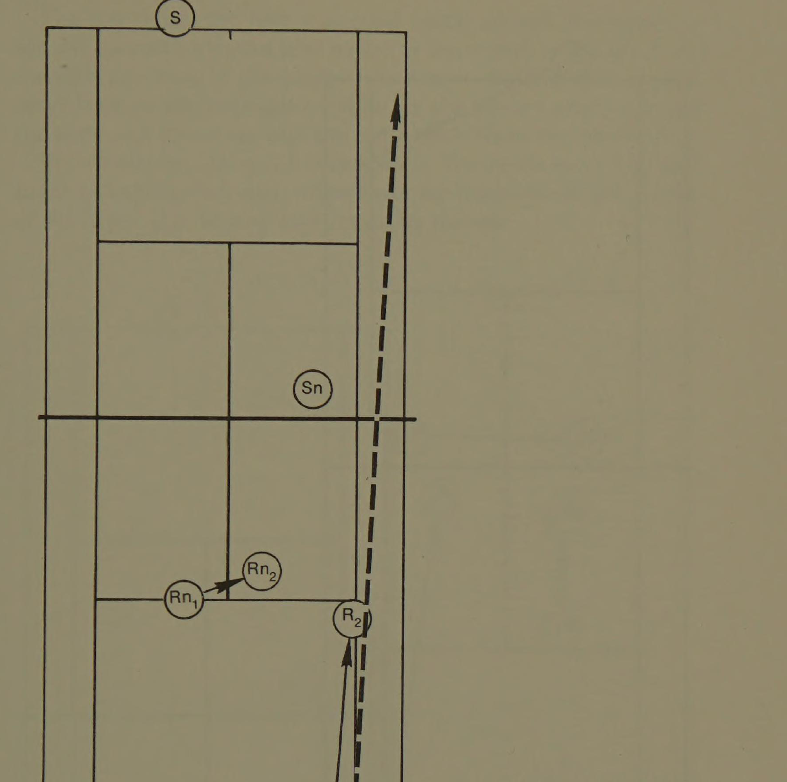
        </div>
        <figcaption class="figure-caption">
            <strong>Sơ đồ 25. Cú Trả Giao Bóng Dọc Dây (Down the Alley)</strong> — Tận dụng việc người đứng lưới bên giao có xu hướng bắt bài lấn sang giữa sân để tung cú bạt bóng dọc hành lang đánh đôi ghi điểm trực tiếp.
        </figcaption>
    </figure>
    

        <h3 class="minor-heading">3. Cú Lốp Bóng Trả Giao Qua Đầu Người Đứng Lưới (Sơ đồ 26)</h3>
        <p>Khi đối đầu với những tay giao bóng quá uy lực hoặc đối phương áp sát lưới quá sát, một cú lốp bóng có kiểm soát bay qua đầu người đứng lưới đối phương rơi sâu xuống góc sân cuối là giải pháp chiến thuật tuyệt vời. Cú đánh này làm đảo lộn toàn bộ cấu trúc tấn công của đối thủ và mở toang cánh cửa chiếm lưới cho đội bạn.</p>

        
    <figure class="book-figure">
        <div class="figure-img-wrapper">
            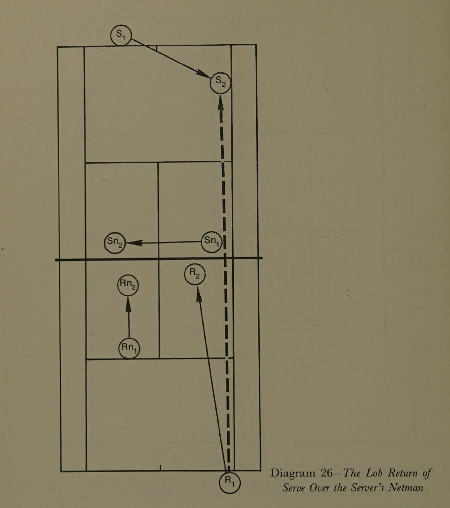
        </div>
        <figcaption class="figure-caption">
            <strong>Sơ đồ 26. Cú Trả Giao Bóng Bằng Cú Lốp Qua Đầu Người Đứng Lưới</strong> — Cú lốp bóng qua đầu người đứng lưới bên giao đẩy đối thủ vào thế phòng thủ lùi sâu về cuối sân và mở toang cơ hội chiếm lưới cho bên nhận.
        </figcaption>
    </figure>
    

        <h2 class="sub-heading">Đội Hình Phòng Thủ Khi Trả Giao Bóng (Sơ đồ 27)</h2>

        <p>Nếu bạn phải đối đầu với một đối thủ có quả giao bóng một quá khủng khiếp mà người đồng đội đứng lưới của bạn liên tục bị biến thành tấm bia hứng chịu những quả volley dứt điểm, đừng ngoan cố duy trì đội hình tiêu chuẩn. Hãy chủ động chuyển sang <strong>Đội hình cả hai cùng lùi sâu (Both-Back / Defensive Receiving)</strong> như trong <strong>Sơ đồ 27</strong>.</p>

        
    <figure class="book-figure">
        <div class="figure-img-wrapper">
            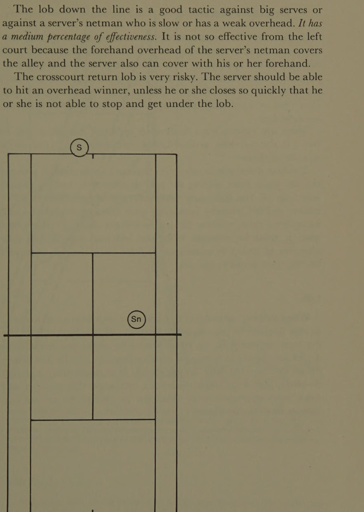
        </div>
        <figcaption class="figure-caption">
            <strong>Sơ đồ 27. Đội Hình Phòng Thủ Khi Trả Giao Bóng</strong> — Cả hai người bên nhận cùng lùi về sau đường cuối sân khi đối đầu với những tay giao bóng quá uy lực, kiên nhẫn giằng co chờ thời cơ phản công.
        </figcaption>
    </figure>
    

        <p>Cả hai người cùng lùi về sau vạch cuối sân sẽ triệt tiêu hoàn toàn mục tiêu bắn phá của đối phương. Bạn có thêm thời gian quý giá để nhìn bóng, kiên nhẫn tung ra những quả bóng sâu hoặc những cú lốp bóng giải tỏa, chờ đợi đối thủ nóng vội mắc sai lầm để phản công.</p>

        <h2 class="sub-heading">Hình Học Mặt Sân và Khái Niệm Sân Ngắn – Sân Dài (Sơ đồ 28 &amp; 29)</h2>

        <p>Hiệu quả của mọi cú trả bóng phụ thuộc sâu sắc vào hình học mặt sân (xem <strong>Sơ đồ 28</strong>). Vị trí bạn tiếp xúc bóng càng cách xa lưới, góc mở sân khả dĩ càng hẹp. Ngược lại, khi bạn tiến sâu vào sân đón bóng sớm, phạm vi góc đánh mở ra trước mắt bạn sẽ mở rộng theo cấp số nhân.</p>

        
    <figure class="book-figure">
        <div class="figure-img-wrapper">
            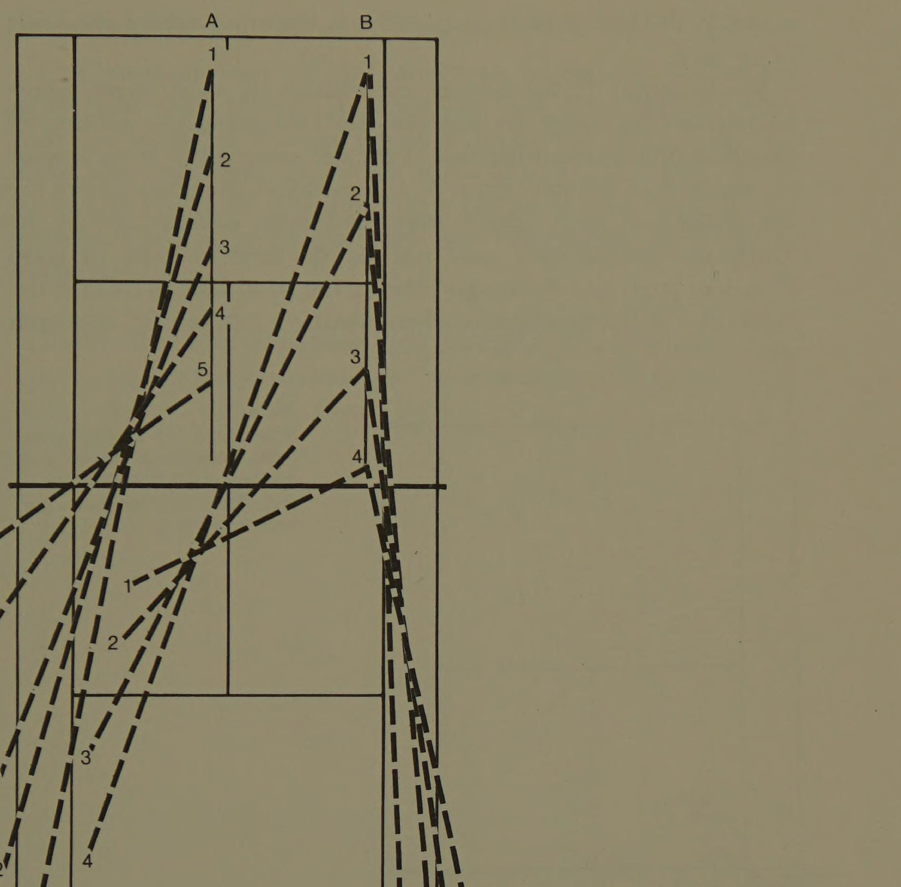
        </div>
        <figcaption class="figure-caption">
            <strong>Sơ đồ 28. Góc Đánh Phụ Thuộc Vào Hình Học Mặt Sân</strong> — Càng xa lưới, góc mở sân càng hẹp; ngược lại, càng tiến gần lưới, phạm vi Góc mở của cú đánh dứt điểm càng rộng mở và nguy hiểm hơn.
        </figcaption>
    </figure>
    

        <p>Cuối cùng, khái niệm <strong>Sân ngắn (Short court) và Sân dài (Long court)</strong> trong <strong>Sơ đồ 29</strong> là công cụ tư duy chiến thuật then chốt để bạn định lượng khoảng trống thực tế bên kia lưới dọc theo hướng bay của bóng. Hãy luôn nhắm bóng vào vùng sân ngắn của đối phương để buộc họ phải di chuyển chéo góc trong tư thế với, tạo cơ hội cho đội bạn dứt điểm tại lưới.</p>

        
    <figure class="book-figure">
        <div class="figure-img-wrapper">
            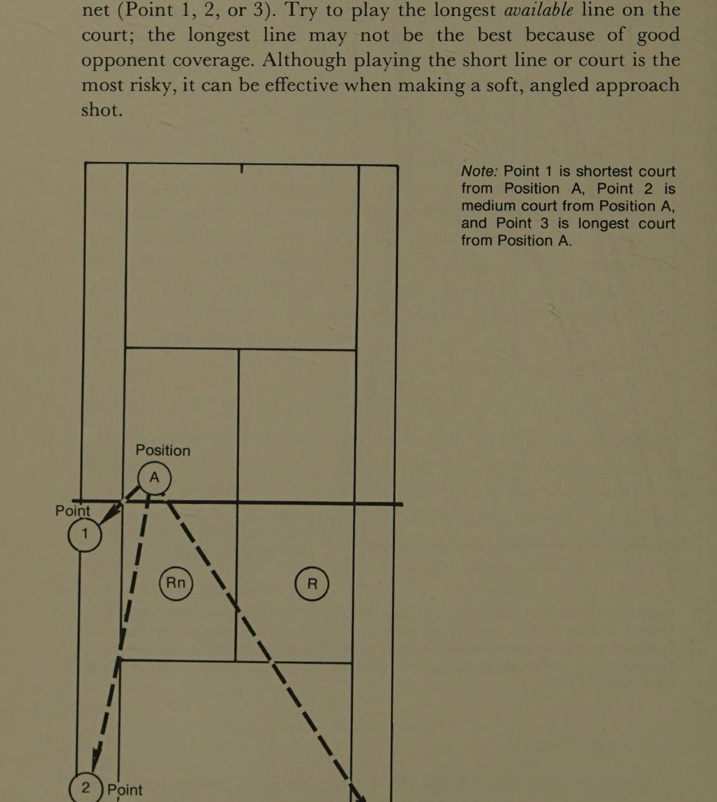
        </div>
        <figcaption class="figure-caption">
            <strong>Sơ đồ 29. Khái Niệm Sân Ngắn và Sân Dài</strong> — Đo lường diện tích sân khả dụng bên kia lưới dọc theo đường đánh bóng. Tận dụng khoảng cách ngắn để tạo cú bỏ nhỏ hoặc góc bạt bóng sắc nét.
        </figcaption>
    </figure>
    
    </div>
</div>


<div class="chapter-wrapper page-break" id="chapter-6">
    <div class="chapter-header">
        <p class="chapter-number">CHƯƠNG 6</p>
        <h1 class="chapter-title">Cuộc Chiến Trên Lưới</h1>
    </div>
    
    <div class="chapter-body">
        <p>Càng di chuyển lại gần lưới, các cú đánh của bạn càng đòi hỏi <strong>tốc độ phản xạ nhanh hơn và ít dùng lực cơ bắp hơn</strong>. Khi đứng ở vạch cuối sân, bạn cần sự phối hợp nhịp nhàng giữa bàn tay, bờ vai và bước chân lấy đà để tạo ra sức mạnh và độ kiểm soát cho các cú groundstroke sâu. Thế nhưng, khi bước lên lưới, thời gian phản ứng bị rút ngắn xuống chỉ còn vài phần mười giây; mọi động tác mở vợt rườm rà sẽ trở thành thảm họa. Tại lưới, đôi tay phải luôn đặt sẵn phía trước mặt, cổ tay khóa chặt và bạn dùng chính sự nhanh nhạy của đôi chân cùng sự chuyển dịch trọng tâm cơ thể để đè bóng.</p>

        <h2 class="sub-heading">Người Giao Bóng và Quả Volley Đầu Tiên (The First Volley)</h2>

        <p>Một quan niệm sai lầm phổ biến của các tay vợt phong trào là luôn kỳ vọng quả volley đầu tiên ngay sau khi giao bóng phải là một cú dứt điểm ăn điểm trực tiếp (winner). Trong thực tế đỉnh cao, quả volley đầu tiên gần như luôn là một <strong>quả volley tiếp cận (approach volley)</strong>. Mục đích cốt lõi của nó là đưa một quả bóng sâu, thấp sang chân đối phương để bạn có thể tiến thêm 2 đến 3 bước áp sát lưới hơn nữa nhằm tung quả volley thứ hai dứt điểm dứt khoát.</p>

        <h3 class="minor-heading">Kỹ Thuật Di Chuyển Uốn Vòng (Looping — Sơ đồ 30)</h3>

        <p>Sau khi giao bóng, đừng chạy theo một đường thẳng tắp cứng nhắc về phía trước. Nếu đối thủ trả bóng sang một góc chéo, chạy thẳng sẽ khiến bạn bị bóng 'ép' vào người hoặc đối mặt với góc đánh quá hẹp. Thay vào đó, hãy áp dụng kỹ thuật <strong>chạy uốn vòng (looping)</strong> như trong <strong>Sơ đồ 30</strong>.</p>

        
    <figure class="book-figure">
        <div class="figure-img-wrapper">
            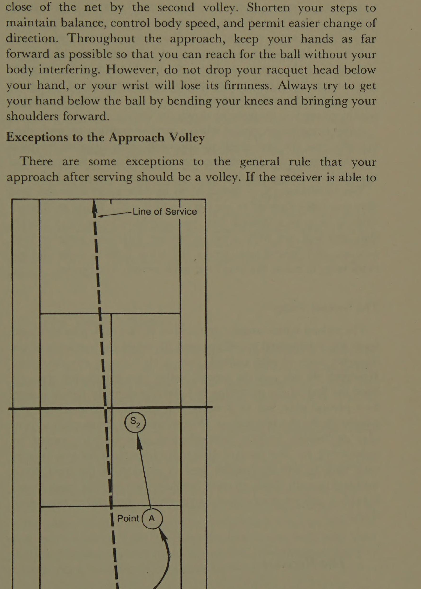
        </div>
        <figcaption class="figure-caption">
            <strong>Sơ đồ 30. Di Chuyển Uốn Vòng (Looping) Để Tìm Tuyến Tiếp Cận Tốt Nhất</strong> — Kỹ thuật di chuyển đường vòng cung khi tiến lên lưới thay vì chạy thẳng tắp, giúp duy trì tầm nhìn bao quát và tạo góc đánh volley thuận lợi nhất.
        </figcaption>
    </figure>
    

        <p>Đường chạy uốn cong cho phép bạn luôn giữ quả bóng ở phía trước tầm mắt, duy trì sự thăng bằng hoàn hảo của cơ thể, mở rộng góc tiếp cận và giúp bạn bước vào tư thế đón bóng với một góc đánh volley thuận lợi nhất.</p>

        <h2 class="sub-heading">Vị Trí Đứng Lưới và Các Tuyến Bao Quát (Sơ đồ 31)</h2>

        <p>Một vị trí đứng lưới chuẩn mực trong đánh đôi được xác định theo nguyên tắc: <strong>Cách lưới một sải tay cộng chiều dài cây vợt, và nằm chính giữa đường giao bóng trung tâm với đường biên dọc</strong> (Điểm A trong <strong>Sơ đồ 31</strong>).</p>

        
    <figure class="book-figure">
        <div class="figure-img-wrapper">
            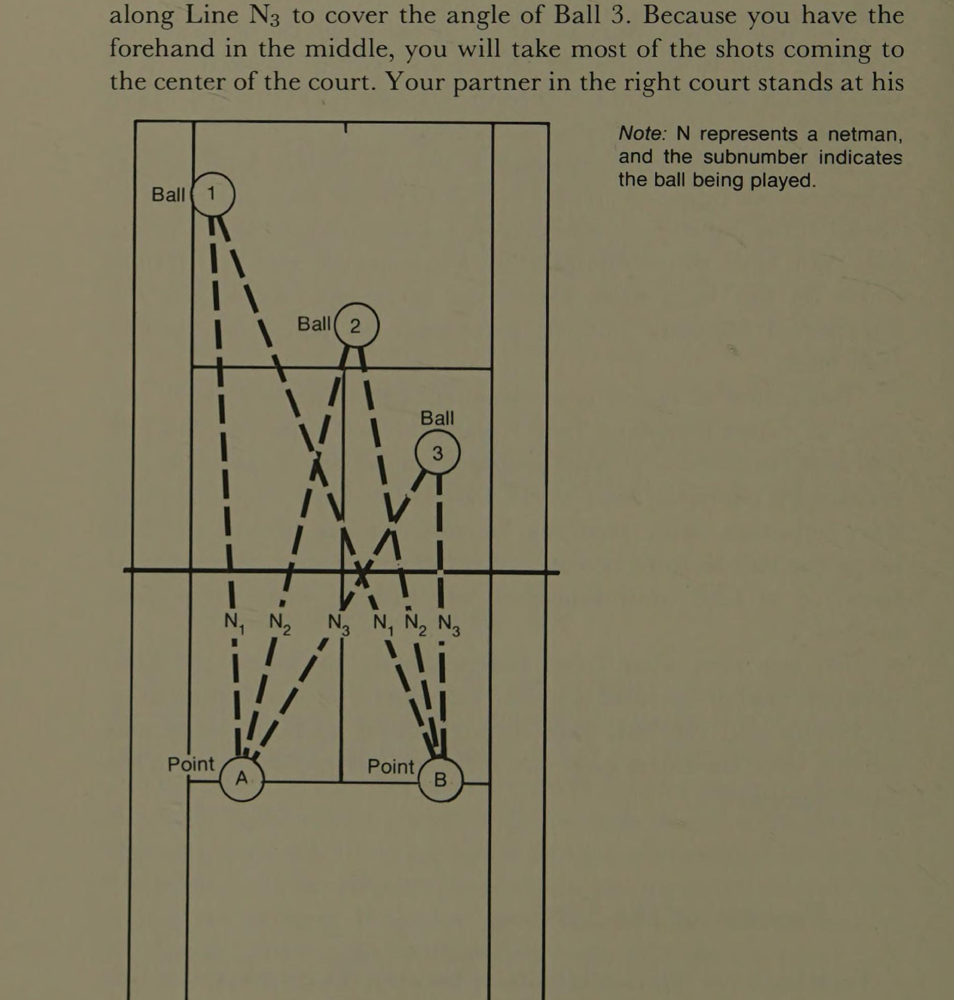
        </div>
        <figcaption class="figure-caption">
            <strong>Sơ đồ 31. Vị Trí Trên Lưới và Các Tuyến Bao Quát Sân</strong> — Vị trí đứng lưới chuẩn ở ô bên trái và cách vẽ đường tưởng tượng từ vị trí đứng đến quả bóng để xác định điểm đón cắt bóng volley chỉ trong một bước di chuyển.
        </figcaption>
    </figure>
    

        <p>Từ vị trí chuẩn này, bạn không cần phải chạy lăng xăng khắp sân. Chỉ cần <em>duy nhất một bước chân chếch 45 độ kết hợp với sải với của cây vợt</em>:</p>
        <ul>
            <li>Bước sang phải để đón chặn đường bóng 1 (Line N1).</li>
            <li>Bước thẳng tới trước để đè bẹp đường bóng 2 bay ngang tầm lưới (Line N2).</li>
            <li>Bước lùi chếch sang trái để bảo vệ hành lang trước đường bóng 3 (Line N3).</li>
        </ul>

        <h2 class="sub-heading">Khái Niệm Chữ T và Tầm Nhìn Ngoại Vi (Sơ đồ 32)</h2>

        <p>Một bí mật then chốt của các bậc thầy đánh lưới là <strong>Khái niệm Chữ T và Tầm nhìn ngoại vi (Peripheral Vision)</strong>. Khi đứng trên lưới, bạn tuyệt đối không bao giờ được ngoái đầu lại phía sau để nhìn đồng đội đang đánh bóng ở cuối sân. Quay đầu lại sẽ khiến bạn mất hoàn toàn phản xạ trước những cú bắn bóng bất ngờ của đối thủ.</p>

        
    <figure class="book-figure">
        <div class="figure-img-wrapper">
            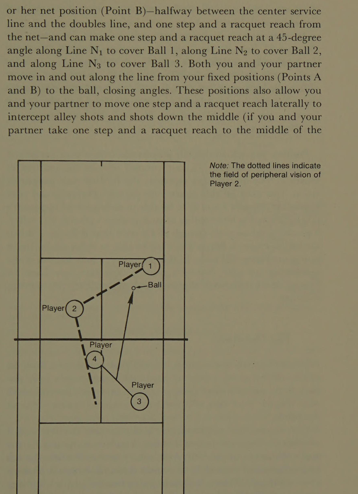
        </div>
        <figcaption class="figure-caption">
            <strong>Sơ đồ 32. Khái Niệm Chữ T và Tầm Nhìn Ngoại Vi</strong> — Đứng ở vị trí chữ T trên lưới và mở rộng tầm nhìn ngoại vi để quan sát toàn bộ vị trí của đồng đội lẫn hai đối thủ mà không cần quay đầu.
        </figcaption>
    </figure>
    

        <p>Hãy định vị bản thân tại vị trí chữ T trên lưới (xem <strong>Sơ đồ 32</strong>) và thả lỏng tầm mắt để kích hoạt tầm nhìn ngoại vi. Với tầm nhìn rộng 180 độ này, bạn vừa có thể quan sát thấy hai đối thủ đứng trước mặt, vừa cảm nhận được vị trí di chuyển của đồng đội qua khóe mắt. Bạn sẽ luôn là người chủ động nắm bắt mọi diễn biến của pha bóng.</p>

        <h2 class="sub-heading">Xử Lý Quả Lốp Bóng và Cú Smash Đập Bóng Trên Đầu (Overhead)</h2>

        <h3 class="minor-heading">Bao quát cú lốp bóng (Sơ đồ 33)</h3>
        <p>Cú lốp bóng của đối phương thường khiến nhiều người chơi hoảng hốt quay lưng bỏ chạy thục mạng về sau. Nhưng theo định luật vật lý quần vợt: nếu bỏ qua độ xoáy, một quả bóng lốp khi chạm đất sẽ nảy lên với độ cao tương đương 50% độ cao của cú lốp. Do đó, ngay cả khi quả lốp bay qua khỏi tầm với trên không của bạn, bạn vẫn hoàn toàn có thể lùi lại và thực hiện cú smash đập bóng sau khi bóng nảy lên!</p>

        
    <figure class="book-figure">
        <div class="figure-img-wrapper">
            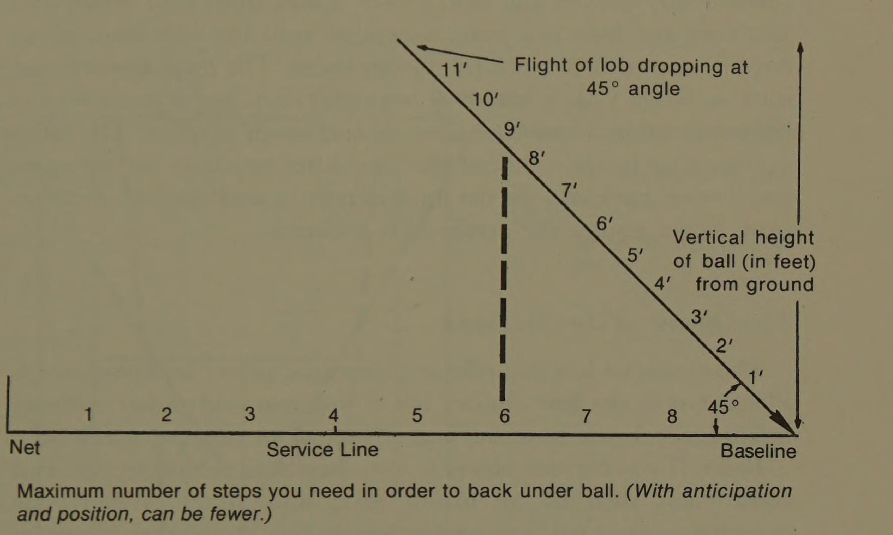
        </div>
        <figcaption class="figure-caption">
            <strong>Sơ đồ 33. Bao Quát Cú Lốp Bóng Qua Đầu</strong> — Chỉ cần 4 đến 5 bước lùi có kiểm soát là có thể bao quát mọi cú lốp bóng có góc rơi 45° trở xuống để thực hiện cú đập overhead dứt điểm trên không.
        </figcaption>
    </figure>
    

        <p>Đối với một quả lốp rơi ở góc 45 độ trở xuống, bạn chỉ cần thực hiện <strong>4 đến 5 bước lùi có kiểm soát</strong> (không quay lưng) là có thể vươn người đón quả bóng ở điểm rơi cao nhất trên không (xem <strong>Sơ đồ 33</strong>). Đập bóng trên không càng sớm, bạn càng tước đoạt thời gian định hình của đối thủ.</p>

        <h3 class="minor-heading">Chọn điểm rơi cho cú Smash Overhead (Sơ đồ 34)</h3>
        <p>Hướng đập bóng overhead phụ thuộc hoàn toàn vào cấu trúc vị trí của hai đối thủ (xem <strong>Sơ đồ 34</strong>):</p>
        <ul>
            <li><strong>Khi đối thủ đứng 'một trên lưới, một dưới đáy':</strong> Hãy thực hiện Cú đập 2 (Overhead 2) — đập một đường bóng sâu góc chéo xuyên thẳng vào khoảng trống giữa hai đối thủ. Đòn đánh này khiến người đứng lưới không dám giơ vợt đỡ vì sợ hỏng, trong khi người đứng dưới đáy không kịp lao lên cứu bóng.</li>
            <li><strong>Khi cả hai đối thủ cùng lùi sâu dưới đáy:</strong> Bạn có thể thoải mái phối hợp giữa lực đập cực mạnh và góc mở rộng để dứt điểm vào khoảng trống hai bên biên.</li>
        </ul>

        
    <figure class="book-figure">
        <div class="figure-img-wrapper">
            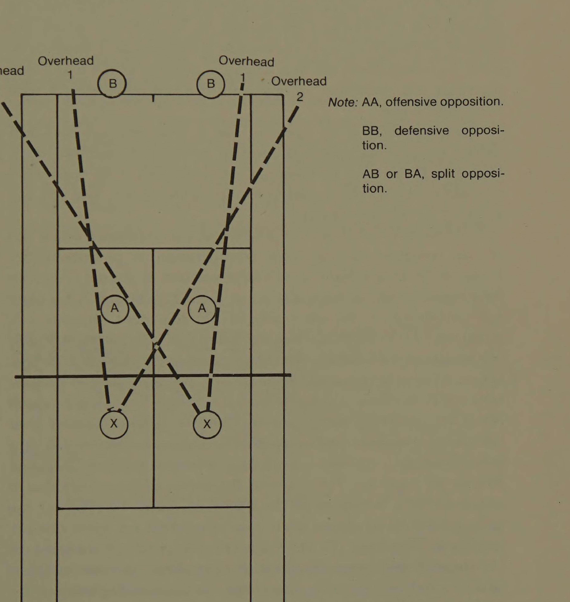
        </div>
        <figcaption class="figure-caption">
            <strong>Sơ đồ 34. Điểm Rơi Cú Smash Overhead Theo Vị Trí Của Đối Thủ</strong> — Chọn hướng đập bóng overhead: khi đối thủ một người trên lưới một người dưới đáy, đập bóng sâu góc chéo giữa hai người; khi cả hai lùi sâu, kết hợp lực và góc mở rộng.
        </figcaption>
    </figure>
    

        <h3 class="minor-heading">Cự ly so với lưới khi phòng thủ quả Smash (Sơ đồ 35)</h3>
        <p>Khi đối thủ đã chuẩn bị giương vợt đập quả smash, nếu bạn đứng quá sát lưới, bạn sẽ trở thành mục tiêu cực kỳ nguy hiểm và dễ bị chấn thương. Hãy lập tức lùi lại vài bước về quanh vạch giao bóng (Vị trí 3 trong <strong>Sơ đồ 35</strong>). Khoảng lùi này giúp kéo dài thời gian bóng bay, cho phép bạn có đủ tích tắc quý giá để đọc hướng đập và đưa vợt ra chặn bóng phản xạ an toàn.</p>

        
    <figure class="book-figure">
        <div class="figure-img-wrapper">
            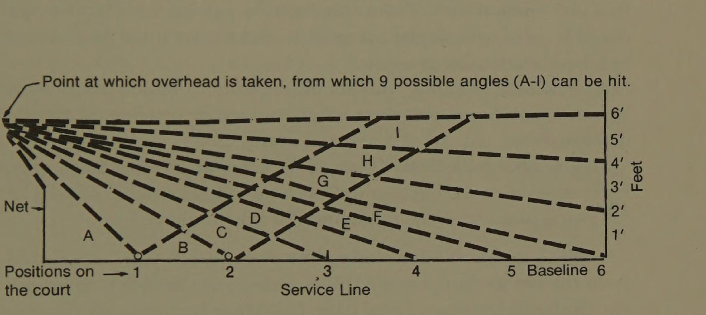
        </div>
        <figcaption class="figure-caption">
            <strong>Sơ đồ 35. Cự Ly So Với Lưới Khi Phòng Thủ Quả Smash Overhead</strong> — Hướng dẫn bước lùi về quanh vạch giao bóng khi đối phương chuẩn bị đập smash, gia tăng thời gian phán đoán để phản xạ cứu bóng an toàn.
        </figcaption>
    </figure>
    

        <h2 class="sub-heading">Chiến Thuật Bắt Bài Cướp Lưới (The Poach — Sơ đồ 36)</h2>

        <p>Bắt bài cướp bóng trên lưới (Poaching) là vũ khí chiến thuật phấn khích và mang tính hủy diệt tâm lý mạnh mẽ nhất trong đánh đôi. Người đứng lưới bất ngờ băng cắt chéo ngang sân ngay trước mũi đối thủ để đập nát đường trả bóng chéo sân.</p>

        
    <figure class="book-figure">
        <div class="figure-img-wrapper">
            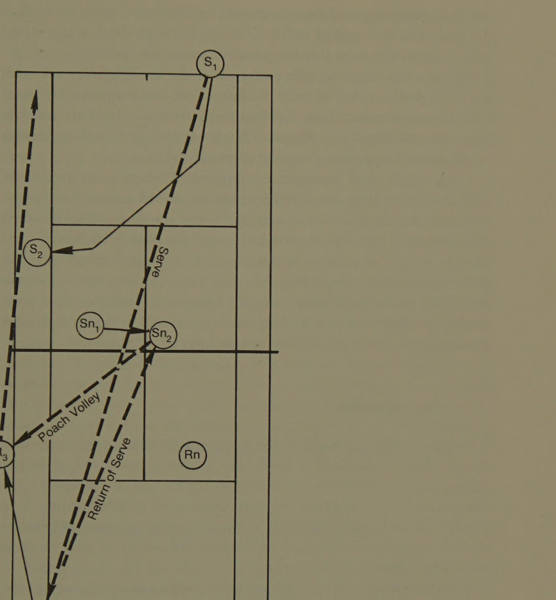
        </div>
        <figcaption class="figure-caption">
            <strong>Sơ đồ 36. Đánh Giá Tỷ Lệ Thành Công Của Cú Bắt Bài Poach Volley</strong> — Phân tích xác suất ăn điểm khi bắt bài cắt bóng volley: cắt bóng vào khoảng trống giữa hai đối thủ có tỷ lệ an toàn và dứt điểm cao nhất.
        </figcaption>
    </figure>
    

        <p>Tuy nhiên, một cú poach chỉ thực sự hiệu quả nếu bạn chọn đúng điểm rơi dứt điểm (xem <strong>Sơ đồ 36</strong>). Thay vì cố bạt bóng ra góc biên đầy may rủi, <strong>lựa chọn có tỷ lệ thành công cao nhất là cắt quả volley xé thẳng vào trung lộ giữa hai đối thủ</strong>. Đường bóng vào giữa sân sẽ tạo ra sự ngập ngừng tai hại giữa hai đối thủ: ai cũng tưởng người kia sẽ đỡ bóng, và quả bóng sẽ lọt qua dễ dàng để ghi điểm winner.</p>

        <h2 class="sub-heading">Nguyên Tắc Vàng: 'Nếu Do Dự, Hãy Đánh Vào Giữa Sân!'</h2>

        <p>Trong những pha đấu bóng cận chiến tốc độ cao tại lưới khi bạn không có thời gian tính toán góc đánh, hãy luôn khắc ghi nguyên tắc bất hủ này của quần vợt đánh đôi: <strong>ĐÁNH BÓNG VÀO GIỮA SÂN!</strong></p>
        <p>Đánh bóng vào giữa sân mang lại ba ưu thế tuyệt đối: (1) Bạn đánh qua phần lưới thấp nhất; (2) Bạn triệt tiêu hoàn toàn mọi góc đánh trả hiểm hóc của đối thủ; và (3) Bạn gây ra sự va chạm, bối rối và đổ lỗi lẫn nhau giữa hai tay vợt đối phương. Đó chính là đỉnh cao của sự đơn giản và hiệu quả trong chiến thuật đánh đôi.</p>
    </div>
</div>


<div class="chapter-wrapper page-break" id="chapter-7">
    <div class="chapter-header">
        <p class="chapter-number">CHƯƠNG 7</p>
        <h1 class="chapter-title">Nền Tảng Xây Dựng Đội Đôi Hoàn Hảo</h1>
    </div>
    
    <div class="chapter-body">
        <p>Một khi bạn đã thấu hiểu các nguyên lý vật lý và hình học của quần vợt, đồng thời thuần thục mọi kỹ thuật đánh bóng cơ bản, xin đừng vội ảo tưởng rằng chỉ cần chăm chỉ tập luyện cá nhân là thành công sẽ tự tìm đến. Những gì bạn vừa tích lũy mới chỉ là <em>phần móng của một ngôi nhà</em>; những gì bạn xây dựng tiếp theo trên nền móng ấy cùng với người bạn đồng hành của mình mới là yếu tố quyết định tạo nên một đội đôi vô địch.</p>

        <h2 class="sub-heading">Giao Tiếp và Đồng Điệu Tâm Lý Với Đồng Đội</h2>

        <p>Đánh đôi là một quan hệ đối tác cộng sinh khăng khít. Hai cá nhân kiệt xuất nhưng không thể tìm được tiếng nói chung sẽ dễ dàng bị đánh bại bởi hai tay vợt có trình độ kỹ thuật trung bình nhưng ăn ý và hiểu nhau đến từng chân tơ kẽ tóc. Để đạt được sự gắn kết tối thượng đó, giao tiếp là chìa khóa vàng số một:</p>

        <h3 class="minor-heading">1. Ra ký hiệu bí mật trước quả giao bóng (Hand Signals)</h3>
        <p>Trước mỗi pha giao bóng, người đứng lưới phải đưa tay ra sau lưng để ra hiệu cho người giao bóng biết trước kế hoạch tác chiến:</p>
        <ul>
            <li><strong>Nắm đấm chặt (Closed Fist):</strong> Giữ nguyên vị trí, không bắt bài (Stay). Người giao bóng sẽ giao bóng vào góc ngoài hoặc chữ T theo thỏa thuận và tràn lên bảo vệ phần sân đối diện.</li>
            <li><strong>Bàn tay xòe rộng (Open Hand):</strong> Bắt bài cướp bóng (Poach)! Ngay khi bóng rời mặt vợt người giao, người đứng lưới sẽ lập tức phóng ngang sang phần sân bên kia để đập nát cú trả bóng của đối phương.</li>
            <li><strong>Chỉ ngón tay sang trái / sang phải:</strong> Chỉ định hướng giao bóng mong muốn (ra góc mang cá hay xé vào chữ T) để thuận lợi nhất cho pha di chuyển cướp lưới tiếp theo.</li>
        </ul>

        <h3 class="minor-heading">2. Khẩu lệnh dứt khoát trong trận đấu</h3>
        <p>Giữa những pha bóng diễn ra với tốc độ tia chớp, đừng ngần ngại lên tiếng! Những khẩu lệnh ngắn gọn, dứt khoát như: <strong>'CỦA TÔI!' (Mine!)</strong>, <strong>'CỦA BẠN!' (Yours!)</strong>, hay <strong>'ĐỔI BÊN!' (Switch!)</strong> sẽ loại bỏ hoàn toàn sự do dự tai hại và ngăn chặn những pha va chạm vợt đáng tiếc giữa hai đồng đội.</p>

        <h3 class="minor-heading">3. Tâm lý học đồng đội tích cực</h3>
        <p>Một nguyên tắc bất di bất dịch của một tay vợt đánh đôi chuyên nghiệp: <strong>Tuyệt đối không bao giờ trách móc, thở dài hay tỏ thái độ khó chịu khi đồng đội mắc lỗi!</strong> Một quả giao bóng kép hay một pha đập bóng rúc lưới của đồng đội đòi hỏi một cái chạm vợt động viên ấm áp, chứ không phải một ánh mắt giận dữ. Hãy nhớ rằng khi đồng đội của bạn mất tự tin và căng thẳng, chính bạn sẽ là người gánh chịu thất bại của cả trận đấu.</p>

        <h2 class="sub-heading">Phân Chia Sân Đấu: Ô Phải (Deuce Court) vs Ô Trái (Ad Court)</h2>

        <p>Việc phân chia ai đứng ô bên phải và ai đứng ô bên trái không đơn thuần dựa trên việc ai thích đứng đâu, mà là một quyết định chiến lược sống còn:</p>

        <p><strong>Ô Phải (Deuce Court) — Ô Của Sự Ổn Định:</strong> Ô bên phải là nơi bắt đầu của mọi ván đấu (0–0, 15–15, 30–30, 40–40). Người chơi đảm nhận ô phải thường là tay vợt có tính cách điềm tĩnh, sở hữu cú trả giao bóng cực kỳ ổn định, ít mắc lỗi tự đánh hỏng và có khả năng điều tiết nhịp độ để kiến tạo cơ hội cho đồng đội.</p>

        <p><strong>Ô Trái (Ad Court) — Ô Áp Lực Tiền Bạc (The Money Court):</strong> Mọi điểm số quyết định thắng thua của cả ván đấu — Game Point, Break Point, Set Point — đều được phân định tại ô bên trái! Người chơi ô trái phải là người sở hữu 'trái tim bằng thép', không hề run sợ trước áp lực, có cú đánh trái tay vững vàng và bản năng săn bàn quyết liệt để tung ra những cú trả bóng dứt điểm kết liễu.</p>

        <h2 class="sub-heading">Bọc Lót Khi Đồng Đội Bắt Bài (Sơ đồ 37)</h2>

        <p>Chiến thuật bắt bài poach sẽ trở thành một canh bạc tự sát nếu người giao bóng không biết cách bọc lót phía sau. Hãy nhìn vào <strong>Sơ đồ 37</strong>: Khi người đứng lưới của bạn băng ngang sân để bắt quả poach volley vào trung lộ, một khoảng trống mênh mông ở phần sân bên họ sẽ bị lộ ra.</p>

        
    <figure class="book-figure">
        <div class="figure-img-wrapper">
            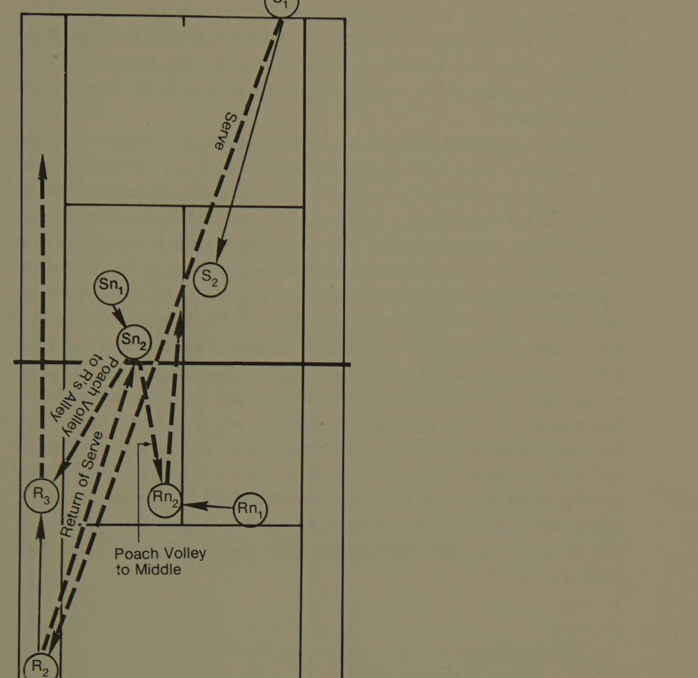
        </div>
        <figcaption class="figure-caption">
            <strong>Sơ đồ 37. Bọc Lót Khi Bắt Bài Poach Với Người Nhận Ở Ô Bên Trái</strong> — Sự phối hợp hoán đổi vị trí giữa hai người chơi khi thực hiện chiến thuật bắt bài poach, bảo đảm không để lộ khoảng trống chết sau lưng.
        </figcaption>
    </figure>
    

        <p>Người giao bóng phía sau phải tự động <strong>di chuyển chéo sân bọc lót</strong> ngay lập tức để bịt kín khoảng trống đó. Nếu cú poach không thể kết thúc điểm số ngay, đội bạn vẫn duy trì được một cấu trúc phòng ngự kiên cố mà không để hở bất kỳ góc chết nào.</p>

        <h2 class="sub-heading">Khi Người Đứng Lưới Bên Nhận Cướp Lưới Ghi Điểm (Sơ đồ 38)</h2>

        <p>Không chỉ bên giao bóng mới có quyền bắt bài. Nếu quả volley đầu tiên của người giao bóng quá non, bồng bềnh hoặc thiếu lực, người đồng đội đứng lưới của bên nhận có thể lập tức <strong>băng cắt ngang lưới tung cú smash hoặc volley dứt điểm</strong> (xem <strong>Sơ đồ 38</strong>). Đây là đòn phản công chớp nhoáng trừng phạt thích đáng sự cẩu thả của người giao bóng.</p>

        
    <figure class="book-figure">
        <div class="figure-img-wrapper">
            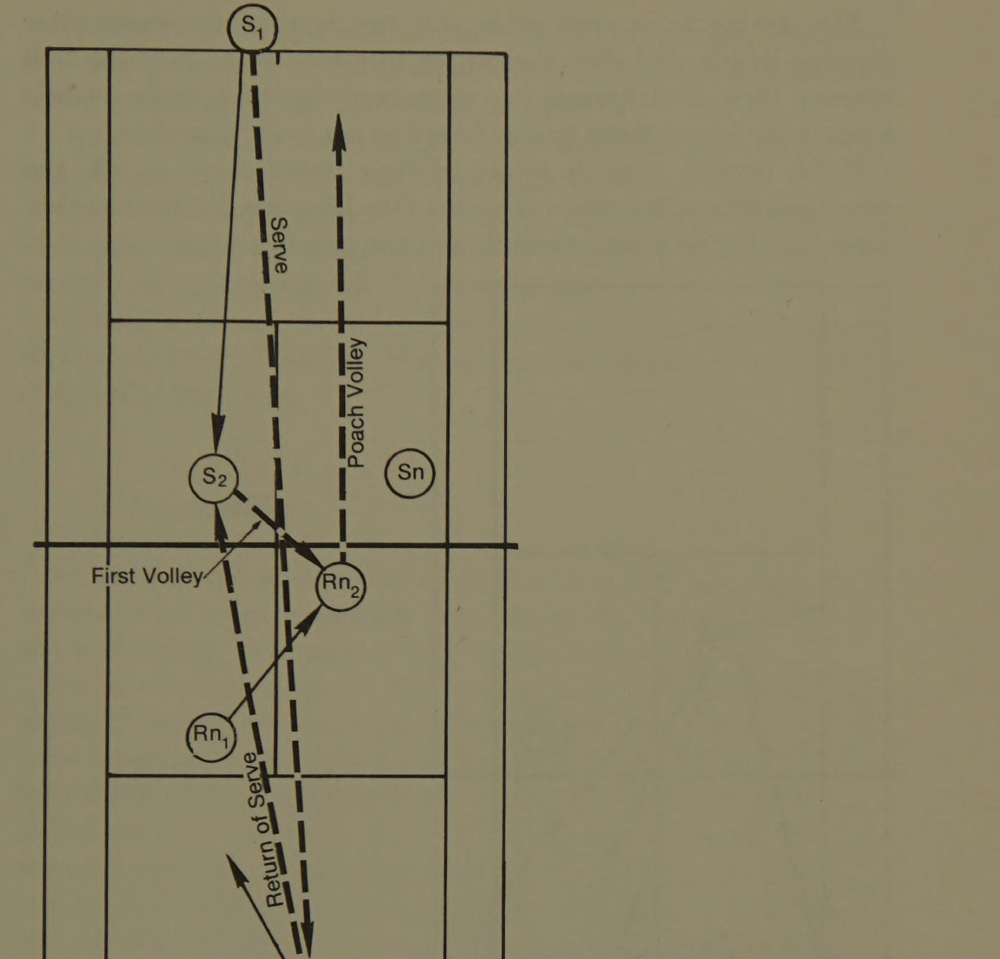
        </div>
        <figcaption class="figure-caption">
            <strong>Sơ đồ 38. Người Đứng Lưới Bên Nhận Giành Điểm Bằng Cú Poach</strong> — Khi cú volley đầu của người giao bóng quá yếu hoặc lơ lửng, người đứng lưới bên nhận lập tức băng cắt ngang sân đập bóng kết thúc pha bóng.
        </figcaption>
    </figure>
    

        <h2 class="sub-heading">Các Phương Án Đối Phó Khi Đối Thủ Bắt Bài (Sơ đồ 39)</h2>

        <p>Nếu người đứng lưới đối phương liên tục bắt bài thành công, người giao bóng có 4 phương án chiến thuật sắc bén để hóa giải (xem <strong>Sơ đồ 39</strong>):</p>
        <ol>
            <li><strong>Phương án 1 (Góc mềm rơi ngắn):</strong> Nếu người đứng lưới đối phương di chuyển hơi chậm, hãy đẩy một quả bóng mềm, rơi chúi sát mép lưới trước mặt họ, buộc họ phải cứu bóng dưới tầm lưới hất lên.</li>
            <li><strong>Phương án 2 (Bắn dọc dây):</strong> Nếu đối thủ di chuyển quá sớm sang giữa sân, hãy bạt thẳng một quả bóng sấm sét dọc theo đường hành lang bên họ để trừng phạt.</li>
            <li><strong>Phương án 3 (Đánh sâu vào người):</strong> Bắn một quả bóng cực mạnh vào ngực hoặc chân người đứng lưới đối phương.</li>
            <li><strong>Phương án 4 (Lốp bóng qua đầu):</strong> Lốp bóng sâu qua đầu người đứng lưới đang lao tới, đẩy họ vào thế bị động hoàn toàn.</li>
        </ol>

        
    <figure class="book-figure">
        <div class="figure-img-wrapper">
            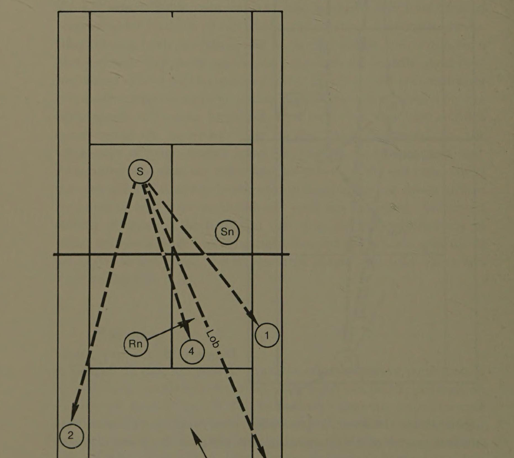
        </div>
        <figcaption class="figure-caption">
            <strong>Sơ đồ 39. Các Lựa Chọn Của Người Giao Để Ngăn Chặn Cú Poach</strong> — Bốn phương án xử lý của bên giao bóng khi phát hiện người đứng lưới bên nhận có ý đồ cướp bóng: Giao bóng phẳng (flat serve) vào người, đổi hướng vào biên, hoặc lốp bóng phòng thủ.
        </figcaption>
    </figure>
    

        <h2 class="sub-heading">Chiến Thuật Đỉnh Cao: Đội Hình Chữ I (The I-Formation — Sơ đồ 40)</h2>

        <p>Đội hình chữ I (hay còn gọi là đội hình Tandem cải tiến / Australian formation) là vũ khí bí mật tối thượng để làm phá sản hoàn toàn các bài trả bóng quen thuộc của đối thủ (xem <strong>Sơ đồ 40</strong>).</p>

        
    <figure class="book-figure">
        <div class="figure-img-wrapper">
            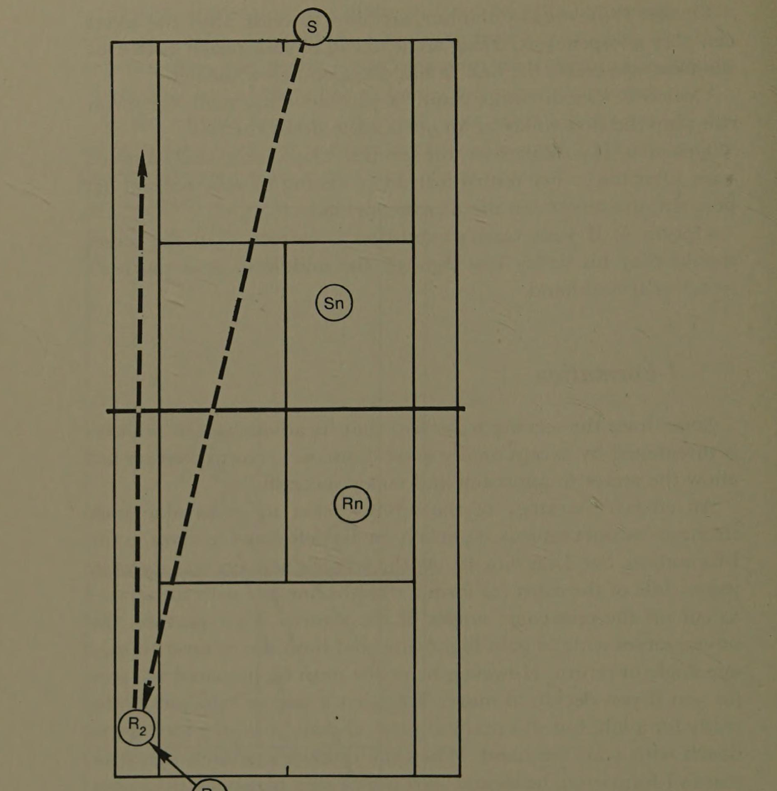
        </div>
        <figcaption class="figure-caption">
            <strong>Sơ đồ 40. Đội Hình Chữ I (The I-Formation)</strong> — Chiến thuật đội hình chữ I kinh điển trong đánh đôi: Người đứng lưới ngồi thụp xuống sát điểm chữ T trên lưới, che giấu hướng di chuyển để gây bất ngờ tuyệt đối cho đối thủ.
        </figcaption>
    </figure>
    

        <p><strong>Cách thức vận hành Đội hình chữ I:</strong></p>
        <ul>
            <li>Người đứng lưới của bên giao không đứng lệch sang một bên sân như thường lệ, mà <strong>ngồi thụp xuống sát mép lưới ngay trên đường giao bóng trung tâm (chữ T)</strong>.</li>
            <li>Người giao bóng đứng sát tâm sân và giao bóng qua đầu người đồng đội đang ngồi thấp.</li>
            <li>Ngay khoảnh khắc đối thủ chuẩn bị vung vợt chạm bóng, người đứng lưới sẽ bật dậy và lao nhanh sang trái HOẶC sang phải theo đúng ám hiệu đã bàn trước.</li>
        </ul>
        <p>Đội hình này khiến người nhận bóng đối phương hoàn toàn bị 'mù hướng' — họ không biết phần sân nào sẽ bị bịt kín và phần sân nào để hở. Sự hoang mang tột độ này thường ép đối phương phải đánh bóng ra ngoài biên hoặc rúc lưới, mang lại những điểm số quý giá định đoạt cả trận đấu.</p>
    </div>
</div>


<div class="chapter-wrapper page-break" id="index-section">
    <div class="chapter-header">
        <p class="chapter-number">PHỤ LỤC</p>
        <h1 class="chapter-title">Bảng Tra Cứu Thuật Ngữ &amp; Chỉ Mục</h1>
    </div>
    
    <div class="chapter-body">
        <p class="index-intro">Bảng tra cứu đối chiếu song ngữ Anh – Việt và hệ thống chỉ mục chuyên ngành hỗ trợ bạn đọc nhanh chóng tra cứu các khái niệm, kỹ thuật đánh bóng và sơ đồ chiến thuật xuất hiện trong sách.</p>
        
        <div class="index-grid">
            <div class="index-column">
                <h3 class="index-letter">A</h3>
                <ul class="index-list">
                    <li><strong>Alley (Hành lang đánh đôi):</strong> Dải sân rộng 4,5 feet ở hai bên biên dọc, mở rộng sân đơn thành sân đôi — <em>Chương 2 (Sơ đồ 1, 2, 3, 4)</em></li>
                    <li><strong>American Twist Serve (Giao bóng xoáy cầu):</strong> Cú giao bóng kết hợp topspin và sidespin tạo độ nảy giật ngược — <em>Chương 4 (Sơ đồ 9)</em></li>
                    <li><strong>Approach Shot (Cú đánh tiếp cận):</strong> Cú đánh dọn đường đưa bóng sâu để tiến lên chiếm lưới — <em>Chương 3, 6</em></li>
                    <li><strong>Approach Volley (Quả volley tiếp cận):</strong> Quả volley đầu tiên sau khi giao bóng nhằm gài bóng thấp sang chân đối thủ — <em>Chương 6 (Sơ đồ 30)</em></li>
                </ul>

                <h3 class="index-letter">B</h3>
                <ul class="index-list">
                    <li><strong>Backcourt (Cuối sân):</strong> Vùng sân từ vạch giao bóng lùi ra sau vạch baseline — <em>Chương 2, 3</em></li>
                    <li><strong>Baseline (Đường cuối sân):</strong> Vạch giới hạn chiều sâu của sân đấu — <em>Chương 2 (Sơ đồ 1, 2)</em></li>
                    <li><strong>Break Point (Điểm bẻ giao bóng):</strong> Điểm số quyết định cơ hội thắng game giao bóng của đối phương — <em>Chương 7</em></li>
                </ul>

                <h3 class="index-letter">C</h3>
                <ul class="index-list">
                    <li><strong>Chip Return (Cú đè bóng cắt):</strong> Cú trả giao bóng sử dụng underspin và động tác mở vợt gọn — <em>Chương 5</em></li>
                    <li><strong>Crosscourt (Chéo sân):</strong> Đường bóng bay theo đường chéo từ ô sân này sang ô sân đối diện — <em>Chương 2, 5 (Sơ đồ 4, 22, 23)</em></li>
                </ul>

                <h3 class="index-letter">D</h3>
                <ul class="index-list">
                    <li><strong>Deuce Court (Ô sân bên phải):</strong> Ô sân bắt đầu của mỗi ván đấu (0-0, 15-15, deuce) — <em>Chương 4, 7 (Sơ đồ 10-13)</em></li>
                    <li><strong>Down the Alley (Dọc hành lang):</strong> Cú bắn bóng thẳng vào dải hành lang của người đứng lưới — <em>Chương 5 (Sơ đồ 25)</em></li>
                    <li><strong>Drop Shot (Cú bỏ nhỏ):</strong> Cú hãm lực đưa bóng rơi sát mép lưới — <em>Chương 3</em></li>
                </ul>
            </div>

            <div class="index-column">
                <h3 class="index-letter">F — I</h3>
                <ul class="index-list">
                    <li><strong>Flat Serve (Cú giao bóng phẳng):</strong> Cú giao bóng tốc độ cao không xoáy — <em>Chương 4 (Sơ đồ 7, 8)</em></li>
                    <li><strong>Half-Volley (Cú half-volley):</strong> Cú đánh bóng ngay khoảnh khắc bóng vừa nảy lên khỏi mặt đất — <em>Chương 3, 6</em></li>
                    <li><strong>I-Formation (Đội hình chữ I):</strong> Chiến thuật người đứng lưới ngồi thụp ở điểm chữ T trung tâm — <em>Chương 7 (Sơ đồ 40)</em></li>
                    <li><strong>Jab Return (Cú giật bóng nhanh):</strong> Cú đấm trả giao bóng mượn lực bóng đối phương — <em>Chương 5</em></li>
                </ul>

                <h3 class="index-letter">L — P</h3>
                <ul class="index-list">
                    <li><strong>Lob (Cú lốp bóng):</strong> Cú đánh cầu vồng bổng qua đầu đối thủ lên lưới — <em>Chương 3, 5, 6 (Sơ đồ 26, 33)</em></li>
                    <li><strong>Netman (Người đứng lưới):</strong> Tay vợt đảm nhiệm vị trí án ngữ tại lưới (Server's netman hoặc Receiver's netman) — <em>Chương 4, 5, 6, 7</em></li>
                    <li><strong>Overhead / Smash (Cú đập trên đầu):</strong> Cú đánh trên không uy lực dứt điểm bóng bổng — <em>Chương 3, 6 (Sơ đồ 34, 35)</em></li>
                    <li><strong>Poaching (Bắt bài cướp lưới):</strong> Người đứng lưới bất ngờ băng ngang sân cắt đường bóng trả — <em>Chương 6, 7 (Sơ đồ 36, 37, 38, 39)</em></li>
                </ul>

                <h3 class="index-letter">S — T</h3>
                <ul class="index-list">
                    <li><strong>Slice Serve (Cú giao bóng xoáy cắt):</strong> Cú giao bóng xoáy ngang trượt thấp ra ngoài biên — <em>Chương 4 (Sơ đồ 9)</em></li>
                    <li><strong>Split-Step (Bước dừng tách chân):</strong> Bước nhảy nhẹ tiếp đất bằng hai chân cân bằng trước khi đối thủ chạm bóng — <em>Chương 4, 5</em></li>
                    <li><strong>T-Concept (Khái niệm chữ T):</strong> Vị trí trung tâm trên lưới kết hợp tầm nhìn ngoại vi 180 độ — <em>Chương 6 (Sơ đồ 32)</em></li>
                    <li><strong>Team-Splitting (Đội hình chia đôi):</strong> Sai lầm một người đứng lưới, một người ở cuối sân không chịu lên — <em>Chương 3 (Sơ đồ 6)</em></li>
                </ul>
            </div>
        </div>
    </div>
</div>

</body>
</html>
